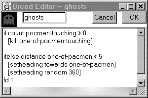
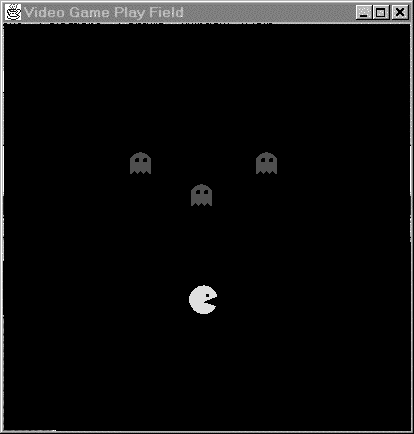
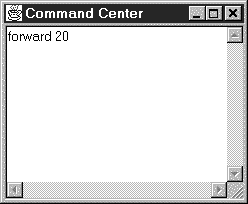
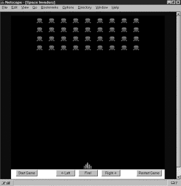

Bongo: A Kids’ Programming Environment
for Creating Video Games on the Web
by
Andrew B. Begel
Submitted to the Department of Electrical Engineering and Computer Science
in Partial Fulfillment of the Requirements for the Degree of
Master of Engineering in Electrical Engineering and Computer Science
at the Massachusetts Institute of Technology
May 23, 1997
Copyright 1997 Andrew B. Begel. All rights reserved.
The author hereby grants to M.I.T. permission to reproduce
distribute publicly paper and electronic copies of this thesis
and to grant others the right to do so.
Author
Department of Electrical Engineering and Computer Science
May 23, 1997
Certified by
Mitchel Resnick
Thesis Supervisor
Accepted by
Arthur C. Smith
Chairman, Department Committee on Graduate Theses
Bongo: A Kids’ Programming Environment
for Creating Video Games on the Web
by
Andrew B. Begel
Submitted to the Department of Electrical Engineering and Computer Science
May 23, 1997
In Partial Fulfillment of the Requirements for the Degree of
Master of Engineering in Electrical Engineering and Computer Science
ABSTRACT
In recent years, a growing number of researchers and educators have argued that design projects provide rich opportunities for learning. To support this type of learning, educational researchers have developed computational environments (such as Logo and LEGO/Logo) that enable children to design their own animated stories, simulations, and even robotic constructions. The rise of the Internet presents an opportunity for new types of design activities, enabling kids to create projects that reach a larger audience than ever before. Some kids are beginning to create their own home pages on the World Wide Web. With the Java programming language, people can now create increasingly sophisticated Web pages with dynamic, interactive content. But Java is intended for expert programmers, not children. This thesis describes a new programming language and environment called Bongo that brings the power of Java to kids. In particular, it discusses a construction kit written in Bongo that enables kids to build their own video games, and to share those games with others on the Web.
Thesis Supervisor: Mitchel Resnick
Title: Associate Professor, MIT Media Laboratory
Acknowledgments
There are so many people to thank and acknowledge for all of their support and help that they have given over the past four years. I’d like to thank Mitchel Resnick, my advisor, for four wonderful years at the Media Lab. Ever since I joined the group as a UROP working on StarLogo, my academic life has been shaped by his research. As I move on, his work will continue to have a lasting influence on my life. Brian Silverman has been my programming partner for three years and has been a great source of inspiration, clever ideas and a youthful spirit. I couldn’t have done any of this without you, Brian, and I hope we’ll keep working together in the future.
I’d like to thank Amy Bruckman, my next door office neighbor, for her valuable commentary on my thesis and all of my work at the lab. I admire Amy because she knows how to believe in herself and offer a little bit of that feeling to everyone she knows. I’d also like to thank Fred Martin for four great years of fun and toys. You’ve created the gadgets that inspired a lot of my work. You were also a great help refining my ideas for this thesis. I’d like to thank Marina Umaschi for her large collection of useful papers and for being a great sounding board for the ideas in this thesis. Thank you to Vanessa Stevens and Rick Borovoy for always being around to answer my questions and always helping out with all of my research. Thanks to Kwin Kramer for all of your technical knowledge. I’m impressed with the progress you’ve made over the past year, and yes, I like your new computational beads. Really. Thank you to Paula Hooper, Aaron Brandes, David Shaffer, Mike Travers, and David Cavallo for listening and answering my random questions for the past few years. Florence Williams, with her quick wit, gave me a smile every time I saw her. That, and a little bit of work to do.
I’d like to thank David Feinberg and Carlos Mochon, my good friends and faithful StarLogo UROPs. You guys provided the inspiration for this thesis with your imaginative work in StarLogo. (I told you it couldn’t crash, and you had to prove me wrong...) I’d also like to thank the UROPs whom I’ve worked with for the past four years: Austina Vainius, Trevor Stricker, Steven Tamm, Drew Samnick, Adam Skwersky, Isaac Persley, Ilya Kaplun, Micah Gutman, and Steve Shapiro. You guys have been great friends and labmates.
Thanks to my mother and father who’ve supported me in all of my endeavors for the past five years of MIT (and survived my switch from Chemistry to Computer Science). You have always been patient with me while I talk on and on about computers.
I also have to thank all of the members of my fraternity, Alpha Epsilon Pi, who for the past five years were my best friends and confidants. You guys always listened to my random comments and unnatural affinity for school. You helped me grow from a shy 18-year old into the loud, talkative, expressive 23-year old that you see today. Thank you for everything.
Table of Contents
1. Introduction................................................................................. 7
2. Motivation.................................................................................... 7
2.1 Why Construction Kits?................................................................................................... 7
2.2 Why Games?..................................................................................................................... 7
2.3 Why Network?................................................................................................................. 7
3. Related Computational Construction Kits................................. 7
3.1 General-purpose Construction Kits.................................................................................. 7
3.1.1 Logo........................................................................................................................... 7
3.1.1.1 Variants of Logo...................................................................................................... 7
3.1.2 Boxer.......................................................................................................................... 7
3.1.3 Agentsheets................................................................................................................. 7
3.1.4 Cocoa (Kidsim)............................................................................................................ 7
3.2 Construction Games........................................................................................................ 7
3.2.1 Rocky’s Boots............................................................................................................... 7
3.2.2 Robot Odyssey.............................................................................................................. 7
3.2.3 The Incredible Machine................................................................................................ 7
3.2.4 Widget Workshop.......................................................................................................... 7
3.3 Video Games..................................................................................................................... 7
3.3.1 Pinball Construction Set................................................................................................ 7
3.3.2 Klik & Play / The Game Factory..................................................................................... 7
4. Design Space of Video Game Construction Kits........................... 7
4.1 Design Principles of Construction Kits............................................................................. 7
4.1.1 Understandability......................................................................................................... 7
4.1.2 Uniformity and Elegance................................................................................................ 7
4.1.3 Interactivity................................................................................................................. 7
4.1.4 Functionality............................................................................................................... 7
4.1.5 Transparency............................................................................................................... 7
4.1.6 Powerful Ideas............................................................................................................. 7
4.1.7 Reflection and Audience................................................................................................ 7
4.2 Design Issues for Video Game Construction Kits............................................................... 7
4.2.1 Game Construction....................................................................................................... 7
4.2.1.1 One Constructor or Collaborative Construction?.............................................................. 7
4.2.1.2 Construction Kit Examples......................................................................................... 7
4.2.2 Programming Environment.............................................................................................. 7
4.2.2.1 What can you make with it?......................................................................................... 7
4.2.2.2 Interpreted or Compiled............................................................................................. 7
4.2.2.3 Direct Manipulation.................................................................................................. 7
4.2.2.4 Abstraction............................................................................................................ 7
4.2.2.5 Debugging............................................................................................................. 7
4.2.3 Programming Language.................................................................................................. 7
4.2.3.1 Models of Computation............................................................................................. 7
4.2.3.2 Graphical or Textual Programming?.............................................................................. 7
4.2.3.3 Data Flow or Instruction Flow?.................................................................................... 7
4.2.3.4 Object-Oriented Programming..................................................................................... 7
4.2.4 Game Structure............................................................................................................ 7
4.2.4.1 What Kind of Video Game?.......................................................................................... 7
4.2.4.2 Storyboarding or Instant Play?.................................................................................... 7
4.2.4.3 One Player or Many Players?....................................................................................... 7
4.2.4.4 Environmental Events............................................................................................... 7
5. Bongo: Video Game Construction Kit........................................... 7
5.1 Overview......................................................................................................................... 7
5.2 Design.............................................................................................................................. 7
5.3 Programming Language................................................................................................... 7
5.4 Implementation................................................................................................................ 7
5.4.1 Bongo: Logo for Java...................................................................................................... 7
5.5 Space Invaders Walkthrough.......................................................................................... 7
5.5.1 Conception of the Game................................................................................................. 7
5.5.2 Breed Creation............................................................................................................. 7
5.5.3 Character Creation....................................................................................................... 7
5.5.4 Wrapping it Up............................................................................................................. 7
5.5.5 Play the Game!............................................................................................................. 7
5.6 Discussion........................................................................................................................ 7
6. Conclusion.................................................................................... 7
7. Bibliography................................................................................. 7
List of Figures
Figure 1: Preliminary Breed Editor....................................................................................... 7
Figure 2: Video Game Playing Field...................................................................................... 7
Figure 3: Video Game Command Center................................................................................. 7
Figure 4: Space Invaders game running inside Netscape.......................................................... 7
In recent years, a growing number of researchers and educators have argued that design projects provide rich opportunities for learning. To support this type of learning, educational researchers have developed computational environments (such as Logo and LEGO/Logo) that enable children to design their own animated stories, simulations, and even robotic constructions.
The rise of the Internet presents an opportunity for new types of design activities, enabling kids to create projects that reach a larger audience than ever before. Some kids are beginning to create their own home pages on the World Wide Web. With the Java programming language, people can now create increasingly sophisticated Web pages with dynamic, interactive content. But Java is intended for expert programmers, not children. This thesis describes a new programming language and environment called Bongo that brings the power of Java to kids. In particular, it discusses a construction kit written in Bongo that enables kids to build their own video games, and to share those games with others on the Web.
This section will introduce the educational motivations for the creation of design activities for children. In the Epistemology and Learning Group at the MIT Media Laboratory, there has always been a strong emphasis on children as designers of their own projects. This group develops new technological tools for learning. Constructionism, developed by Seymour Papert, is the guiding philosophy for this research (Papert, 1980, 1993, 1996). Constructionism describes both a theory of learning and a strategy for education. As a theory, constructionism is based on the constructivist theories of Jean Piaget, the Swiss psychologist who studied learning in young children. Piaget argued that children construct their own knowledge during learning; knowledge is not simply transferred from one person to another. Papert expands on this idea by stating that one particularly good way to construct new knowledge is to construct tangible objects that a child can reflect upon and share with others (Kafai and Resnick, 1996).
In this chapter, I will explore several underlying motivations for enabling kids to build their own games on the Internet. “Why Construction Kits?” makes the argument that construction kits are important to provide design opportunities for children. “Why Games?” argues that games are in the “kid culture” and are personally meaningful to children. Finally, “Why Network?” discusses what advantages and prospects the Internet can bring to construction kits and game media.
Since construction is an important activity, getting children engaged in design activities is a good idea. A growing number of researchers have stated that design activities provide great opportunities for learning. Mitchel Resnick and Natalie Rusk, co-founders of the Computer Clubhouse in Boston (Resnick and Rusk, 1996), have compiled a list of reasons for this interest in design-oriented learning:
·Design activities engage youth as active participants, giving them a greater sense of control (and responsibility) over the learning process, in contrast to traditional school activities in which teachers aim to “transmit” new information to the students.
·Design activities encourage creative problem solving avoiding the right vs. wrong dichotomy prevalent in most school mathematics and science activities, suggesting instead that multiple strategies and solutions are possible.
·Design activities can facilitate personal connections to knowledge, since designers often develop a special sense of ownership (and caring) for the products (and ideas) that they design.
·Design activities are often interdisciplinary, bringing together concepts from the arts, mathematics, and sciences.
·Design activities promote a sense of audience, encouraging youth to consider how other people will use and react to the products they create.
·Design activities provide a context for reflection and discussion, enabling youth to gain a deeper understanding of the ideas underlying hands-on activities.
Other educational researchers have explored different aspects of design activities. Idit Harel engaged elementary school students in creating their own educational projects to teach fractions to other school children (Harel, 1990). Gerhard Fischer has been studying how computational environments can support transparent design, where the users notice only the problems they must solve, and not the computational framework around them (Fischer and Lemke, 1987-88, Fischer, 1993). Mitchel Resnick created StarLogo to encourage a new type of “decentralized” mindset to enable kids to learn about and model complex systems (Resnick, 1994). Alex Repenning has studied how children program and has been developing new graphical techniques to lower the threshold for programming (Repenning, 1994, 1995, 1996).
If it is good for kids to engage in design activities, then we should provide them with good construction kits. There have been several different types of “computational construction kits” developed by researchers for design activities. One of the earliest and most popular was Logo. Logo enabled kids to teach a robot-like turtle how to do simple tasks. They could use the turtle to explore mathematics, geometry, and more recently, storytelling, animation, and games.
Other researchers have chosen to explore constructionist environments where the focus was not on the computer screen, but in the physical world. One such environment was LEGO/Logo. This activity combined multiple types of design, using LEGO blocks as a mechanical design tool and Logo programming as a software design tool (Resnick, et. al, 1996). This combination allowed children to make mechanical creatures and endow them with behaviors, such as a paranoid robotic car that ran away from light, or a social ant that liked to dance with other bugs (Braitenberg, 1984). The 6.270 Robot Design Contest at MIT grew out of this work. Students created robots out of LEGO and programmed them to solve a series of tasks autonomously. Fred Martin, one of the contest’s designers, wanted to explore how MIT engineering students thought about the process of design and implementation, and how much they could balance real-world problems with idealistic designs (Martin, 1994).
No matter which generation you are in, playing games is an integral part of childhood. Growing up, I was involved in nursery school games like tag and leapfrog. Once I entered elementary school I started playing soccer and baseball. These games held my interest for awhile, but I sensed that organized sports weren’t for me and eventually dropped out by sixth grade.
There was one type of game that I started playing and haven’t yet stopped—video games. When I was 9, our family got an Atari 2600. We played Space Invaders and Combat and Street Racer. I had a lot of fun down in the basement with my brother and sister, daring them to score more points than me. One month, my dad surprised us and got Pac Man. This was supposed to be the most amazing game out at the time. But my dad wouldn’t let me play it until I learned how to ride my bike without training wheels. I tried and I tried, but I couldn’t get over my fear of falling down. My brother and sister were having the best time playing Pac Man. They played it almost everyday. I think they did it just to get to me. Well, it did, so one day I took my bike out of the garage, brought it to the street and rode down the block without my training wheels. I went straight to my parents, told them what I had done, and stormed right downstairs to play my first game of Pac Man. I’m not sure of which event I was more proud, riding my bike or playing Pac Man.
Video games are in today’s “kid culture” (Jenkins, 1993). This game culture started out with games like Space Invaders and Pac Man, but has quickly progressed to Super Mario Bros., Doom and the current favorite, Diablo. Children love to play games. They have a deep connection to them because the games transport them to a fantasy world where they can discover unexplored territory, take their hero on a quest to save the princess, and shut out all other distractions (including their parents). Kids also like to talk about games with other children. They trade gaming hints, like where all the secret doors are, and reflect on gaming strategies, such as what order to solve the puzzles of a game in, or which pattern of moves will enable you to get the most points in Street Fighter.
Since games are so much in the culture, we should harness them to constructionism. There have been many building games, like Rocky’s Boots and The Incredible Machine, that allow kids to build contraptions to solve puzzles. But these games only allow children to explore the design space which the authors allow. Why not give kids the opportunity to design and create their own games? If we give them good construction tools, then they could not only be creating something personally meaningful, but they also would be connecting to math, science, programming and other important domains of knowledge.
Over the years, several researchers have created new types of environments to explore the constructionist approach to video games. For example, Yasmin Kafai investigated ways in which children at Hennigan Elementary School in inner-city Boston could use Logo to make educational video games to teach younger kids about the solar system. These games triggered the children’s interest because they were not perceived as boring schoolwork, but as fun projects in which they actually could learn about science and teach others about it, too (Kafai, 1993).
At the end of the year, Kafai’s kids’ projects were presented to the parents at a game fair. Children took their parents on a walkthrough, showing them all of the interesting things that one could learn about the solar system. However, it would have been better if it were easy to publish these games, so that anyone could try them. Anyone would be able to give the children feedback about their games and offer suggestions for improvements.
The rise of the Internet presents this opportunity, enabling kids to create projects that reach a much larger audience than ever before. Several educational researchers have created “communities of learners” on the Internet, where school children collaborate on problem-solving activities and experiments. Scardamalia and Bereiter have looked at “knowledge building communities” and how learning in groups changes and distributes the acquisition of knowledge (Scardamalia and Bereiter, 1994). Songer studied children working together to use the Internet as a medium for engaging in science activities (Songer, 1996).
Other researchers have concentrated on making the Internet into a place where children can collaborate together to construct personally meaningful objects. Amy Bruckman created a virtual world, or MUD, where kids can congregate, socialize and actively create and design their environment (Bruckman, 1997). Children on MOOSE Crossing can create their own objects. For example, one girl’s pet penguin object won’t eat shrimp when it’s on a diet. This object interacts with its environment and with other members of the MOOSE community. This constructionist community of designers forms the basis for a type of learning that accelerates kids’ understanding of programming. Everyone in the community has a common focus, creating new objects, and helps one another by sharing programming skills and assisting less-experienced users.
A sense of community can also be found on the World Wide Web. The Web's introduction several years ago created a global audience that can browse what designers create. The Web has given everybody the ability to design web pages, where they can explain who they are, show a picture of what they look like and share their favorite links. The web’s architecture also encourages children to build on each other’s work. Every browser supports “view source,” where kids can find out how the author wrote their web page.
Up until now, however, further opportunities for design have been constrained by the static nature of the Web’s content. Java, a new Internet language designed by Sun Microsystems, has opened the door toward richer dynamic content on the Web. Using Java, a person may create a simulation, an animation or even an interactive video game. But there is a problem. Java is intended only for expert programmers. This thesis extends Java by creating the Bongo programming language, so that kids can gain access to a constructionist design environment on the Web. Earlier projects have shown that video games can be an exciting design and learning domain. This thesis presents the design and implementation of a video game construction kit, a tool that enables kids to easily design and implement video games to share with others on the WWW.
This chapter discusses several different types of computational construction kits. By no means a complete listing, this selection of examples is presented here to illustrate various design considerations that other researchers have taken in their research.
The first section, “General-purpose Construction Kits,” discusses Logo, Boxer, Agentsheets, and Cocoa and illustrates how these kits have been used with children, and advantages and disadvantages to each of their approaches to learning. The second section, “Construction Games,” introduces several games that use a construction metaphor to engage children in design. Rocky’s Boots, Robot Odyssey, The Incredible Machine, and Widget Workshop are all widely varying examples of construction games that have been popular with kids in the past. The last section, “Video Games,” specifically talks about video game construction kits and how these kits approach the task of enabling children to easily create their own video games.
Logo, designed in the 1960’s, was one of the first programming languages created for children. A team of researchers at BBN and MIT, including Seymour Papert and Wally Feurzeig, created this variant of Lisp to meet specific design goals. They wanted to make Lisp more accessible to non-programmers, especially children. They achieved this in several ways. First, they simplified Lisp’s syntax, removing parentheses, reducing the number of syntactic forms and shrinking the primitive sets. They did, however, keep Lisp’s dynamically-scoped, procedural semantics.
Another approach to enhance Logo’s understandability was to leverage it off natural language. Whenever a child tried to ask Logo to do something it didn’t understand, Logo would respond, “I don’t know how to do that.” Children could then teach the Logo interpreter how to do different tasks by saying “to make-a-square” and writing a procedure that told the computer how to make a square.
One of the overall results of Logo was that its accessibility provided a gateway through which children could reach many different problem domains where interesting questions lay. In the programming domain itself, children might discover recursion as a way to tell a procedure to repeat over and over again. They could learn new debugging skills when the computer executed a procedure differently than they had thought it would. They could also actively explore the Logo environment by interacting through a command center. Here, they could try out new commands and receive instant feedback about what they did. This helped immensely in debugging efforts, since children could try procedures with many different inputs to understand its complete behavior.
Outside of the programming domain, the introduction of the Logo Turtle (Papert, 1980) allowed kids to reach “Mathland.” Mathland was a metaphor for a place where children could use math as fluently as they used language. The Logo Turtle enabled children to think about mathematics and geometry using body syntonics. Children could envision themselves as the turtle, moving around on the ground to draw geometrical figures. This enabled children to think about computational geometry, instead of the more traditional Euclidean or Aristotelian geometry.
Logo became very popular in elementary schools, and with the help of Mindstorms (Papert, 1980), Turtle Geometry (Abelson and diSessa, 1986), and other educational books, many people thought that the children would easily make it to Mathland. Unfortunately, for all of the powerful ideas that Logo might help children to reach, it didn’t achieve the epistemological success that Papert sought. This was due to several problems: the inertia of the school system to resist change, the paucity of computers in schools, and the tendency of teachers to lecture to children, instead of letting them learn on their own. Others thought that some problems were due to Logo itself, rather than how it was deployed and used. They thought that Logo was too low-level and that domain-specific tools might be better to engage kids in learning (O’Shea, in press).
Since the 1960’s, the Logo turtle has been used in many different types of Logo programming environments, including moving from robotic form to screen form in the very popular Apple Logo, written by LCSI (Logo Computer Systems Inc). For many years, Apple Logo was used in elementary schools to teach geometry and math. In the mid 1980’s, LCSI introduced Logo Writer. This version opened up the design space further by adding turtle shapes and multiple turtles. Children could assign turtles different shapes and create stories using the new characters they made. Kids could also create video games, for example, by using a turtle for the enemy, a turtle for the hero and some turtles for the bullets.
At this point in Logo’s history, the technology could not yet match the kids’ expectations. Some of Kafai's students would come to school with grandiose plans about what they would work on that day, but then run up against technological limitations in Logo Writer. Kids wanted more turtles so they could have more than four characters at a time. There was also no multi-threading, so it was not easy to tell all of the turtles to do different things at the same time (Kafai, 1993).
The next Logo by LCSI was MicroWorlds. This version, introduced in 1992, included support for modern computer features like multimedia, sprite animation, sounds, movies, and paint tools. It introduced multiple processes, so kids could more easily program turtles independently and not worry about managing multi-threaded program flow.
MicroWorlds’ use of multiple processes was inspired by MultiLogo and StarLogo, both created by Mitchel Resnick (Resnick, 1991, 1994). StarLogo, written for the Connection Machine 2 parallel computer, added many more turtles to the Logo canvas. Users could have up to 16,000 turtles, instead of merely one or two. It opened up a whole new design space where children could model ant colonies, flocks of birds, or even create ideal gas molecular simulations. StarLogo suffered from one disadvantage, however. CM2s cost about one million dollars, so anyone who wanted to use StarLogo had to come to MIT.
In order to alleviate the access problem, StarLogo was ported to the Macintosh. A very lightweight process switcher enabled the serial processor of the Macintosh to emulate the 16,384 processors of the Connection Machine. A SPMD architecture (single program, multiple data: many turtles each running one program, but each with their own program counter) was also adopted. This provided an advantage over the SIMD model of computation (single instruction multiple data: many turtles, each running one program in sync) on the CM2 because now each turtle was now free to run separate pieces of code at the same time. The move to the Macintosh also enabled the addition of extra graphics and user interface features that were impossible on the CM2, such as sprites, paint tools and an interface builder.
The sprite graphics, combined with breeds, a turtle grouping feature, turned out to be an interesting addition to StarLogo, that allowed users to more easily identify with the simulations they were creating. During the summer of 1996, MIT undergraduates David Feinberg and Carlos Mochon used StarLogo to recreate two classic video games, Pacman and Frogger. The games looked and felt just like the originals and were fun to play. They were also unexpectedly easy to program. These video games were the inspiration for the work described in this thesis.
Boxer is a unique programming environment that embodies the ideals of Logo, Lisp and Smalltalk (diSessa and Abelson, 1986). Invented by Andy diSessa and Hal Abelson, it explores the transformation of Logo from a procedural text-based environment into an object-oriented hybrid graphical-textual environment.
Before the 80’s, Logo never really concentrated on the programming environment in which the children created their projects. At best, children could hope for a split screen approach, where they could see the turtle or the procedures, but never both at the same time. Boxer, in the Smalltalk tradition, integrated the procedures page with the graphics page and created a multimedia graphical approach to programming. Boxer actually foreshadowed the World Wide Web and document-based computing because it turned all data, including multimedia, into first-class manipulable objects on the screen.
Boxer’s basic building block is the box. Boxes can contain programs, data, text, pictures, and even other boxes (thereby supporting hierarchical structures and abstraction). Boxer’s display of its collapsible boxes (which visually indicate black boxing) “encourage programmers to interpret the organization of the computational system in terms of spatial relationships” (diSessa and Abelson, 1986). Children can also analyze dynamic program flow by employing the “Little Man” explanation of structural programming. Whenever a procedure calls another one, it appears as a box inside the first procedure call. When that procedure is finished, the box collapses and the original procedure regains control (diSessa, 1986).
Agentsheets is a visual programming construction kit created by Alex Repenning at the University of Colorado (Repenning, 1994). The first version of Agentsheets used a purely graphical approach to programming agents (similar to Logo turtles) that occupy cells in a grid. Using graphical rewrite rules to illustrate transitions from one picture state to the next, the agents can be programmed to move around the grid and interact with each other. This model of computation is very similar to the Turing machine model. But, like the Turing model, it suffers from an exponential rule growth.
Repenning writes that programming via graphical manipulation lowers the threshold for beginning programmers, especially kids. He has also experimented with a form of physical programming involving a robot and LEGO road base plates. Children programmed the car to always stay on the road, and could meta-program the robot by putting different road plates in front of it. This way they could make the robot go anywhere they wanted without ever typing a single command (Eden, et. al. 1996).
Recently, with the development of Visual Agentalk, Repenning has shifted his model of programming from graphical rewrite rules to a more programmable, direct manipulation approach (Repenning and Ambach, 1996a,b). Using command and sensor blocks in a stimulus-response framework, programmers can create behaviors using parameterized blocks. This alleviates much of the problem with the explosion of rules because it raises the abstraction level of programming above the Turing model. In addition, the user can try out commands or stimulus-response rules directly by dragging them on top of the agents. This allows the user to test and debug commands and rules interactively while programming.
Cocoa, a product from Apple Computer, is similar to the first version of Agentsheets. Created by Alan Cypher and David Smith, Cocoa’s programming style is an extreme experiment in pure graphical rewrite rule programming (Smith, Cypher, Spohrer, 1994). Intended as an introduction to programming for young children, kids can create their own simple projects by defining characters from a palette and placing them on a playfield. Similar to Agentsheets, the children can define transitions between before and after graphics to control the characters on the field.
Cocoa suffers from the same exponential blowup of rules as Agentsheets, but the designers feel that the increased usability and understandability of the simple rules allow children to more easily express themselves. Rather than working to raise Cocoa’s ceiling, they feel that adding more modalities and breadth of I/O to Cocoa is a better way to entice more children to program. (Cypher, 1996)
Apple has invested quite a bit of time and money into the background support of Cocoa. They recently introduced a Cocoa plug-in for Netscape, which allows kids to play their games (but not create them) on the Web. Apple also maintains a web site that allows kids to publish their projects and even participate in a best game contest. This web site is an important step in widening the audience for kids’ projects. Prior to the Web, children could create projects, but could only show them off to their friends in the same room. With the Web, however, children can publish their projects to a much wider audience and enjoy the benefits of this new interaction.
There were a number of games introduced in the early 1980’s that incorporated the construction kit metaphor in the activity itself. Rocky’s Boots, designed by Warren Robinett, allowed kids to learn logic and circuit design by constructing digital circuits. Each level of the game had challenging problems where children would wire up block sensors to various types of digital gates in order to recognize and “boot” a certain pattern of blocks. For example, if there were six blocks on the screen, and you were instructed to “boot” the red triangles, you could connect up a triangle shape sensor and a red color sensor to an AND gate which would then connect to the Boot. Whenever the sensors were both triggered by the red triangles, the Boot would kick the block out of the way and you would earn some points. There were also more complex sequence problems such as recognizing a red triangle only after seeing a blue square.
A graphical programming approach was used in this environment, as well as an electric data flow model. Similar to Widget Workshop (which is a much more recent game and is described below), children could connect wires between various logic gates and flip-flops in order to create a circuit. The kit had some facilities to aid debugging these circuits. When the power was turned on, you could watch the action of your digital circuit as the current flowed through the machine. You could also turn a dial to control the speed of the electric flow. Rocky’s Boots contained different rooms in its world where you could quickly try out different circuit combinations. It was also a modifiable environment. Children could build their own variants of Rocky’s Boots games and challenge their friends with difficult sequences of blocks.
Robot Odyssey, a game from the Learning Company, followed in Rocky’s Boots footsteps. It continued the use of the electric data flow model, but applied it to a robot’s brain. Children could program a robot to move around and interact with objects in a virtual world on the computer screen. Inside the robot’s head were a variety of sensors and actuators that could be wired together through logic gates, flip-flops and IC’s. To make a robot that followed the wall, a child would wire the left wall bumper to the right and rear thruster, thus keeping the robot against the wall and moving it forward at the same time.
Robot Odyssey also used a graphical environment, but expanded on the spatial metaphor by constructing an elaborate virtual world with puzzles to solve in every room. The child could try out a variety of robots in each room and test different circuits to see which would work the best. The instruction manual included with the game also gave quite a few example challenge problems. These ranged from wall-following to finding a key in a maze of stairways.
While the environment supported active exploration of various circuit ideas, it wasn’t easy to create a circuit that would work. This problem isn’t particular to this game, however; it is a problem that plagues robot designers to this day. Fred Martin, a researcher in the Epistemology and Learning Group, helped create the 6.270 LEGO Robot Design Contest at MIT. Students had to build a robot out of LEGO and program it to perform autonomously in a sixty-second contest against another robot. Often, the MIT students had problems overcoming noisy sensors, incorrect assumptions of environmental conditions, and problems learning exactly what the actuators could and could not do. On the other hand, students learned system theory related to control and feedback, bottom-up design, and programming techniques for unpredictable, non-ideal, noisy, environmental conditions (Martin, 1994).
Robot Odyssey supports black boxing. Children’s circuits often get large, gangly and unwieldy, turning into tangles of wires. Robot Odyssey’s circuit metaphor extends to IC chips, which provide an good metaphor for black boxing large programs. By moving the robot to the chip burning room, children can take a snapshot of a its “brain” (disconnected from its inputs and outputs) and burn a new chip with the program inside. Then they can put this chip inside the robot head and wire it directly to the sensors and actuators with very little mess. This works well, except that children sometimes forget what the input and output pins of a particular IC do. To help avoid this problem, Robot Odyssey provides a documentation tool to record the description of the inputs and outputs of the chips.
The Incredible Machine, published by Sierra On-Line, is a construction kit in which kids put together a Rube-Goldberg contraption to solve a puzzle. By connecting pianos, traps, levers and guns, kids can solve each new level of the game. The Incredible Machine uses a direct manipulation style interface, where each element in the parts palette can be dragged out onto the screen. The user can easily test out different configurations of parts to see if it would solve the puzzle.
One problem with this game is that sometimes the parts needed to be perfectly aligned in order for them to work, and there are no visual clues other than running the simulation to find this out. The game is also not customizable; the parts are static. The user can not extend the game to include more parts or modify existing ones to exhibit different behaviors. Sometimes the machines that are created get quite complex, so a facility for abstraction and black boxing a particular machine would be helpful, too. The next version of The Incredible Machine adds the ability to create new puzzles, so the user can devise their own challenges for their friends.
Widget Workshop is a product published by Maxis, the company that makes SimCity and other popular simulation games. Using Widget Workshop, children can make complicated machines from timers, switches, gates, and other graphical objects that perform different tasks. Children are challenged to create the right machine to achieve a particular goal, such as turning on a light, or making a Rube-Goldberg contraption work correctly.
Widget Workshop uses a data flow metaphor. Using wires to connect different parts together, children wire up inputs to outputs and create large information flow graphs. Widget Workshop is also graphical, so children use the mouse to directly manipulate the parts on the screen to place them in their proper locations. When the children have finished building a machine, they turn on the power and the machine starts to compute. If they have connected everything together correctly, a light goes on and a bell rings. The designers of this construction kit were very aware of the importance of good graphics and sound in keeping the child’s attention.
There are some problems with this program, however. There is a large library of parts, and none of them are identified with any text labels. Sometimes the icons are not plain enough to decode what they do. To a beginner using this program, this might be intimidating. There also is no facility for abstracting or black boxing a machine that a child has made. Some of their challenge problems require a large array of parts to be strung together, and without any means of black boxing, the screen quickly becomes a tangled mess of data flow wires. There also are no debugging tools in the programming environment. The only evidence that a machine didn’t work is that the light and sound didn’t go on. Some animation of data flow through the wires might be a plausible way to illustrate this, in addition to a testbed where the child could try out different configurations of parts to produce intermediate outputs.
Pinball Construction Set, written by Bill Budge, is a design kit that lets kids build pinball machines and play with them. Children can choose parts from a palette of bumpers, pins, racks, and flippers to create the ultimate pinball game. Users use direct manipulation to drag parts off the palette and place them on the playing field. They can also paint a background on the game. The set allows users to control system parameters like gravity, elasticity of the bumpers, and the speed of the game itself. An advanced feature allows users to use Boolean logic to specify how points are scored based on the particular bumpers and knobs that the ball hit during play. Once the user is done constructing their game, they can press the “Make Game” button which saves the completed game on the disk for people to play. This saved version does not include the development environment, however, so finished games are not modifiable. In addition, without the original “source code,” you can not reverse engineer a pinball game to see how it was constructed.
While Pinball Construction Set made it easy for children to create interesting pinball games for themselves and their friends, it did have some problems. It did not have any intelligence about where you were allowed to put pinball game pieces on the screen. You could easily make a structure that the ball could never reach, or a pocket where the ball would always become trapped. Fischer and Lemke argue that construction kits should have semantic knowledge of their programming domain and help the user avoid these dynamic “run-time” errors. (Fischer and Lemke, 1987-88).
In a totally different genre of building tool, Klik and Play (from Maxis) and its big brother, The Game Factory (from Europress), are video game construction kits that allow kids to create Nintendo-style video games easily. Employing a form of visual programming, Klik and Play gives the programmer a large palette of characters, backgrounds and props. The user may define different scenes, or may define a large world that scrolls as the player moves around in it. The programming environment uses drag and drop to allow the programmer to directly manipulate the characters on the screen (i.e. to define a path for a particular character to run, you right-click on the character, click on the Define Path menu item and drag the character around the screen). The game uses the right mouse button to pull up context sensitive menus to affect the characteristics of an object. Once you have defined your game, you can press a button, and it turns into a standalone application, playable without the construction environment.
The Game Factory contains a large library of shapes and animations. The library is almost too large, since there isn’t much organization to its parts. Example characters and parts are only divided by their inherent types and not by their purposes in particular games. On the other hand, The Game Factory comes with several pre-built games that can be opened and edited just like any other game. This gives the beginning user a base on which to start learning how to program in the environment.
The creation of a new construction environment for children is no easy task. One would hope to build off the lessons learned from past construction kits, as well as incorporate the latest ideas from the research in children’s learning and cognition. There have been quite a few researchers interested in children’s cognitive understanding of programming environments (Papert, 1980, 1993, 1996, diSessa and Abelson, 1986, Fischer and Lemke, 1987, Harel, 1988, Kafai, 1993, Resnick, 1994, Smith, Cypher, Spohrer, 1994, Repenning, 1994, 1996, Sargent, 1995, Umaschi, 1997).
Based on this research, I have selected several broad principles for creating computational construction kits for children: understandability, uniformity and elegance, interactivity, functionality, transparency, powerful ideas, and reflection and audience.
This chapter discusses these overall design criteria for construction kits, and then speaks specifically about those issues that affect video game construction sets in particular. The next chapter proposes a new type of video game construction kit based on the conclusions of this discussion.
The most important task of any construction kit designer is to choose metaphors, languages, and tools that enhance the environment’s understandibility. Since non-expert users have a limited mental model of the system, the construction kit is the tool that creates an abstraction layer between the problem domain and its implementation.
The different metaphors chosen by the designer allow the users to connect the design environment to familiar objects and experiences. Logo employed body syntonicity to allow children to relate the Logo turtle’s action to their own body’s movements. Direct manipulation interfaces are used in many systems to minimize the distance between a user’s actions and their effects on the screen. Video games employ joystick controllers to directly control characters on the screen (Schneiderman, 1992). Though some abstract concepts are difficult to express, direct manipulation interfaces generally enhance understandability when used appropriately.
Design environments should also have knowledge about how their own pieces fit together, and as a result of this information, they should be able to guide the user into putting these parts together in a logical and rational way (Fischer and Lemke, 1987-88). One common pitfall for construction kits designers is to provide only the construction materials, and forget to include the instructions on how the materials are supposed to go together. Using the “view source” option, Web browsers allows users to gain access to author’s “source code.” This ability to see the underlying “real” representation of the page gives users examples of correct usage of HTML that allow them to extend their own work in new creative dimensions.
Uniformity and elegance are the same idea viewed from two different perspectives. Uniformity is seen by the user of system. When users encounter a consistent, uniform user interface, it enables them to learn better and reduce mistakes (Schneiderman, 1992). In a structured user interface, the users expect that each level will behave similarly—that the same gestures and commands will produce equivalent effects.
Elegance is uniformity seen from the programmer’s point of view. Programmers strive to achieve elegance in their design and coding. Often, this involves many code revisions, but when the finished product is done, it can often be admired as a work of art.
These two concepts may not seem connected at all, but in a construction kit, they are tied together intimately. A construction kit designer must combine a uniform interface and programming metaphors to allow the user to understand their system easily. But since the user is also going to use the kit as a construction tool, the kit must allow the user/programmer to create elegant code.
Uniformity and elegance are not always easy to achieve, even though they are often desired. In some cases, non-uniformity may actually aid in comprehension by exposing flaws in the programming metaphor. These flaws reveal actual implementation details that must be surfaced to the user in order to give them a clear picture of what is really going on inside the computer. For example, in Boxer, every UI element is a box or contained within one. However, when two boxes need to reference the same object (a common occurrence in most traditional programs), two linked ports are used. Ports are like boxes, but are linked, so that a change in one port is immediately seen in the other. This port is necessary to achieve a standard effect in computer programming, but violates the “naive realism” of the interface.
“User interfaces are often considered to be separable from programming language semantics and almost an afterthought in language design. Worse, most present languages assume only character-stream input and output. A useful medium must be much more flexibly interactive.” (diSessa and Abelson, 1986). diSessa and Abelson lamented on the state of programming environments in the mid 1980’s and the situation hasn’t gotten much better for the programming community.
For special audiences, however, construction kits being created today find ways to become more interactive with their users. The systems might support direct manipulation which allows the user to affect the objects and metaphors present in the interface as if they were concrete objects. They also might talk back to the user and suggest possible courses of action, or give the user help when they notice there might be a problem. They may support interactive program development where a child can receive instant feedback about a program change and be able to debug the program while it is running.
SmallTalk and Boxer pioneered the idea of the combined user interface and programming language. Apple’s language, Dylan, had a programming environment that was a logical successor and upgrade to the SmallTalk-80 environment (Palmen, 1995). It incorporated color graphics and drag-and-drop direct manipulation, but Apple closed the project several years ago due to excessive delays in shipping. Kansas, a research project from Sun Microsystems, is a collaborative shared environment where many users can interact with each other and the system to create projects. A derivative of Self, itself a derivative of SmallTalk, Kansas supports interactive shared debugging in its networked environment by actively transporting its users to Oz, a shared graphical debugger, whenever a serious problem occurs (Smith, Wolczko, Ungar, 1997).
In programming, a construction environment that supports interactive development is necessary. If active exploration, undo/redo, direct manipulation, and feedback are part of the interface experience, then in the tradition of Boxer and SmallTalk, why shouldn’t they be also a part of the programming experience as well? These concepts would make programming easier, less frightening (since a child could try out lots of things quickly without fear of breaking the system) and bring it closer to the actual domain in which the child is working. A challenge for general-purpose construction kits is to provide some type of general direct manipulation interface without becoming too abstract in the actual problem domain that the child wishes to explore.
There are several different degrees of functionality that a construction environment must support. First, it must be capable enough to create a variety of outputs in the domain in which it operates. In the video game realm, it must be capable of producing a video game that supports graphics, animation, and some form of player control.
Once the basic formula has been created, what then? What extra functionality does the system support? A system could provide more interesting inputs and outputs or more modalities with which the user might control the system and receive information from it. Agentsheets and Cocoa have explored these types of functionalities quite extensively. Other systems could branch out in orthogonal directions, incorporating 3D graphics, animation creation and scripting, and complex character behavior generation.
Randy Sargent explored how multiple input and output modalities affect the kinds of projects you can make. He found that the variety of activities does not increase linearly with the number of things the program can connect to, but grows exponentially. Most of the simple and interesting applications of a program can be found at the intersections between things the program can read in and things that the program can output. Since complex applications will involve more than one input/output pair, and each modality can interface to many different things in the world, the number of possible activities grows at a very high rate (Sargent, 1995).
There is a tradeoff between usability and expressiveness in domain-specific and general-purpose systems (Repenning, 1996). A domain-specific system can be used to provide highly specialized tools which are capable of producing very polished projects. Since the author of the kit understands everything about the particular domain, he may provide a complete set of tools with which to work. On the other hand, a general-purpose system is flexible enough to explore multiple domains, especially those that the designer hadn’t intended. Indeed, a creative user might use a general-purpose design kit to explore a particular domain of interest as deeply as a domain-specific tool, though the threshold might be higher.
“Is the system made from turtles all the way down?” This Logo cliché is often used to describe systems that are created in their own programming environments. Systems like Lisp and SmallTalk are written in earlier versions of themselves and serve as platforms for programming new features. Thus, when a programmer doesn’t understand how a certain Lisp procedure works, he/she may search through the source code and read how it was done.
A similar principle could be at work in construction kits for non-expert programmers. If the system is powerful and general enough to be written in itself, then when the user doesn’t understand how a piece works, he/she can choose to look at the “source code.” Some systems, like Agentsheets are not written in themselves. To create a new graphical agent or new type of rule, you must program it in Lisp. Clearly, for the person who is a perfectly comfortable user of Agentsheets and not a Lisp programmer, the system will not be extensible without having an expert programmer on call.
Construction kit designers have a vested interest in making a fun toolkit that children can use to explore a large design space. In order to capture the children’s interest, the scope of the design space must include topics that are personally meaningful. Video games have been in the “kid culture” since the late 1970’s, and serve as a very compelling medium for exploration.
While a toolkit can merely be a vehicle for designing video games, it could also be utilized as a way to learn while designing. It can provide children the means to reach powerful ideas. Seymour Papert used the phrase powerful ideas to describe fundamental concepts that, when realized or learned, provide leverage for exploring new domains (Papert, 1980). Some of these concepts, like logic, probability, feedback and abstraction can be encountered while designing and implementing a video game. Comprehension of these concepts is valuable since they directly apply to many different domains, but as cognitive tools, they provide the leverage to explore and design in new domains. Life is about exploring different domains of knowledge and creating new knowledge in each of them. A person’s personal interests guide them through life’s design space and enable them to learn about new domains that are personally meaningful.
Reflection upon the design process and its result is an extremely important part of any design experience. Construction kits should support reflection in its many forms. One such form, iterative design, allows programmers to create and refine their ideas about the system they are building. Harel and Kafai asked all the children participating in their project to keep a notebook log of what they had accomplished each day. Reflection is an important part of this design process; without it, there would be no checks or bounds on the direction of the project.
Another aspect of reflection is the evaluation of the final design and product. Did it perform up to its expectations? Is there anything else to add? What modifications could be made to make it different or better? Other people might also take a look at the final product and offer suggestions. In the past, most school projects were shown off to children’s friends, or to parents on Parent-Teacher night. But, with the rise of the Web, a child can post their project for everyone to see. They can also advertise it in schools newsgroups or via mailing lists. People that the child doesn’t even know can stop by to take a look. They can comment on the work through email, perhaps suggesting new ideas or different implementations. Children can also surf the Web and see other kids’ games on the net and get new ideas for projects of their own. The Web opens up and diversifies the audience for a child’s project.
There are quite a few specific design issues for video game construction kits. Some are involved with game construction; others have to do with the programming environment and language that the child programs in. Each of the different issues affects the process of creating games and determines what kinds of games can be constructed. Through the prior analysis of both general-purpose and domain-specific construction kits, this section hopes to make clear some good directions and tradeoffs in the construction kit design.
This section covers several different areas that affect how children sit down and create games. The first part examines what happens to the design process when either one or more children interact to create a project. The second part explores how the quantity and type of examples included in the kit affect the children’s exploration of design space.
While there are many different considerations for construction kit design, one that affects the programming environment the most is whether the toolkit is geared toward one constructor or a community of constructors. A one constructor model allows an easier and less complex design, since many problems that come with coordinating multiple programmers just do not occur in a single user environment. On the other hand, many children tend to work in groups on projects, whether due to lack of computer resources or while working on group activities. A construction kit that supported a collaborative video game creation environment could be quite desirable.
In a one constructor model, the construction kit designer must take care to engage the user. The environment should be simple enough to be understood by one person working alone, but support a deep enough experience that the child won’t get bored quickly. The system can also make the assumption that the single creator knows everything about the project on which they are working. It doesn’t have to resolve design conflicts that come from having more than one programmer. On the other hand, some researchers feel that the system should then take an active role in guiding the programmer towards interesting areas of the video game domain, or invite them to explore little-used, but interesting features (Fischer, 1993).
A single user system can also take advantage of the multiple modalities of today’s modern user interfaces. In many computers, there are keyboard, mouse, joystick, sound, and sometimes pen inputs. Since the user is always sitting in front of the computer, the system may use all of these to create a complete user interface.
All of the early construction environments were geared towards one child construction because networking was not widespread enough. If a joint effort was desired, two kids would get behind the computer, one controlling the keyboard, and the other controlling the mouse. A few more would gather behind them and “drive” by shouting commands to them. “Move the mouse over there!” “Tell that turtle to go forward 1!”
Another more common type of collaboration occurs in classrooms where children are working on programming projects. One child will look at the other’s screen and copy anything that seems interesting. Over the course of a few hours, quite a few ideas could spread throughout the entire classroom in a form of low-tech networking.
If networking is available, then instead of asking “how many people can you fit around one computer?” you might ask “will people working at their own computers construct the same project together or work on different projects separately?” In addition, you might ask if these people will work asynchronously or synchronously with each other. Asynchronous environments like the Web enable off-line construction. People create projects by themselves and then publish them on-line. Synchronous environments allow multiple people to collaborate together in real-time to develop a project.
Some existing environments have taken different stances on the above two questions, but many support more than one style of construction. MOOSE Crossing, a MOO created for kids by Amy Bruckman, supports children working on separate projects in a shared world (Bruckman, 1997). However, since MOO’s are object-oriented, children’s projects are usually related by parent-child-sibling inheritance relationships. In Kansas, a shared graphical programming environment written by Smith, Wolczko and Ungar at Sun Microsystems, researchers work together to debug problems that cause part of the system to crash (Smith, Wolczko, Ungar 1997). In Castle Infinity, an adventure game published by Starwave Corp., children must work together to solve puzzles and finish a quest in a shared graphical world.
In a collaborative environment, kit designers should consider a few policy decisions that can affect the rest of the environment and the construction process. How do the children divide up the labor? How do they assign access control and permissions on objects? How are they able to communicate with each other while working on a project? And, finally, when they are all done, how do they publish and advertise their project to everyone else?
In a shared project, children are required to work together to construct something. How should they decide how to divide up the labor? In a video game project, they each might work on the behaviors for a different character. Then they could all work together to integrate the characters into the game and help each other in the debugging. For example, if three children wanted to work on a game of Space Invaders, they might split up the three characters, aliens, hero and bullets among them. Then, when the behaviors have been completed, they can all work together to place the characters in the game. When they begin to play, each might notice some bugs or strange effects and go back and fix them.
Permissions come into play when a child wishes to create a new object. There are many different types of permission structures. For example, in an object-oriented environment, a child may have seen some other interesting object in the system and want to make their own version. Who determines whether a child should be allowed to look inside another person’s object? The object could be controlled by no one, in an open system, or by the owner of the object, usually its creator. A child might not even need to open up an object in order to copy or subclass it. Again, the owner might allow or deny this attempt to examine the object. Generally, it is probably a good idea to let children get practice arbitrating their own privacy and permission issues, since these are pervasive policy questions in the adult world.
There are several modes of communication available in a networked environment. The simplest is a small IRC-like chat window at the bottom of the screen where children can send messages back and forth. A more integrated system might take the form of a MOO, where textual interactions with other users and objects are the dominant working mode. If asynchronous communication is desired, one could support email or a public bulletin board system where children can ask each other questions and get answers. One interesting implementation of a bulletin board is an electronic white board. Every person gets a pen and can write messages to each on a shared graphical board. Taking this one step further, in a truly shared virtual world, all of the children get a mouse pointer and may manipulate shared objects in real-time. Since there is only one world, all children would be able to view any piece of it whenever they wanted. Thus, they could use the world to leave messages or objects that they have created for each other.
On many systems, designers have taken care to manage their collaborative worlds to foster a sense of community between the users. This includes providing opportunities to show off children’s work and providing the means to expose children to things that they normally wouldn’t have come across.
Every winter in MOOSE Crossing, there is a public pet show, where children who have created new an interesting pet objects come to show them off. This usually leads to a flurry of new construction activity where everyone tries to integrate the new and interesting features that they have seen into their own pet projects. While the pet show sparks some new activity, the more common social conversations on the system also provide ideas to children from each other. When one child comes to another and says, “Look at my new pet purple ostrich!” a link is formed through which ideas, feedback and suggestions may flow.
In Kansas, whenever anyone makes a big enough mistake in their program to crash the system, all of the users are transported together to Oz where they can work together to fix the problem. The users might not have known each other otherwise, but in these times of crisis, people may work together to fix someone’s project (Smith, Wolczko, Ungar, 1997).
The WWW created a new form of public bulletin board for publishing projects. Since a net connection is quite cheap, and most schools have already been wired up to the Internet, children can get their own home page without difficulty. Suitable construction media, such as Cocoa or Java, and now Bongo, allow programs to run inside web browsers. Children may use these tools to construct various projects and show them to the world. While most children’s web pages aren’t heavily trafficked, enough people will stop by and give comments on the projects and offer suggestions for improvements. This kind of anonymous feedback is very interesting. It might even be taken more seriously than feedback from a person the child knows because this anonymous person could be an “expert” in project’s domain.
Examples help the user figure out the syntax and semantics of your particular system, as well as show them examples of good style and successful designs of projects (Fischer, 1993). It is also easier to modify existing projects when you are learning than to come up with new ideas on your own. For example, 6.001, the introductory computer science class at MIT, teaches freshman and sophomore students about programming by asking them to modify or complete partially written programs.
How many examples should be distributed with the construction kit? How are they distributed? Are they modifiable? Can someone open them and understand how they were created? Examples can be packaged either as components in a library or pre-built projects. How many components should ship in the library? If the design space of this construction kit allows wide ranging exploration, then a library with just few sample objects for each category in the design space should be sufficient. But how much is enough? If too many components are in the library, the users might feel lost in a sea of possibilities. At this point, the organization of the components becomes critical. Components should be organized in multiple hierarchies, not just by object type. Users should be able to search through the component sets and easily find what they need.
How are the example projects distributed? Usually, most construction kit designers would include a few pre-built examples with their kits. However, with the rise of the Internet and the WWW as a free publishing medium, many designers have started to put new and updated projects on Web pages. Interested programmers can surf to these pages and download them. This publishing medium gives the kit creator the ability to update and add new examples over time, and it allows the programmer to gain access to new and interesting projects. Programmers can even use the Web as a transfer medium to trade projects with each other. Klik and Play and The Game Factory have a Web bulletin board where children not only share finished projects, but also help each other find and fix bugs. In addition, the public pooling of knowledge about programming techniques is valuable for beginners and experienced programmers alike. Kit designers can also use this medium as a way to get feedback on their example projects and distribution techniques.
In 1994, the 6.270 LEGO Robot Design competition was started by Fred Martin and Randy Sargent. Students, undergraduates including myself, had to build Robo-Pirates. These robots had to capture pirate treasure (pick up foam blocks) and drink pirate punch (pick up sawed off plastic soda bottles). Students could take either a defensive strategy by collecting their own treasure and punch, or take an offensive strategy, and raid the other pirate’s treasure. Most people started out with their own ideas about what to do. A few days into the contest however, one team created a robot that ran around to the back of its own pirate ship, and one by one, knocked the bottles into its basket. As soon as everyone saw this, 20 teams switched their strategies to this one. Only five teams remained on any offensive strategy, and eventually one of these won the contest.
Students in this contest were easily swayed to making simple modifications on one simple strategy, rather than branching off to make unique projects. While modifying standard projects can be a great learning activity, it stifles creativity if the design experience does not provide opportunity to create more than one iteration of a project. Had the students in the contest the opportunity to try it again, more of them would have investigated offensive strategies.
The programming environment of a game construction kit is the place where the user encounters the metaphors, functionality, and style of use that are appropriate for their task. There are some fundamental questions to ask that determine the course of the environment. The following sections give a small discussion of each issue and touch upon some advantages and disadvantages of different approaches.
What can you make with the system? How much can it do? This is ultimately tied into the architecture of the kit, whether it is general-purpose or domain-specific. There is no black and white distinction between these two, however. Each construction kit can exist on a continuum between low-level and high-level programming. Often, the designer of such a kit must help build a bridge from the bottom level implementation details of a system to the high-level domain-specific knowledge that the user will have. The real issue is how far to make each side go before deciding where exactly on the bridge they will meet.
General-purpose programming environments allow users and programmers to explore many personally meaningful domains of interest without getting in their way. Traditional programming languages, like C, Lisp, Logo, and Smalltalk are general-purpose enough to allow programmers to write applications in any domain that want. Some even provide enough flexibility to define themselves recursively! These languages are also Turing complete, which means that they can compute anything that any possible Turing machine (or program) can compute.
Even though the designer of a general-purpose environment only has a limited idea of what to do with it, it may be used in many more domains. This gives programmers enough flexibility to create anything that they want to make, instead of limiting themselves to the environments’ authors’ imaginations. With this flexibility, however, comes some tradeoffs. Since these environments enable programmers to explore a very large design space, it becomes easy to get lost without any guidance. Usually, programmers must have a good idea of the type of project that they want to create before they sit down at the computer. Exploratory environments like Logo and Smalltalk make the conceptual development of a project easier by supporting interactive development.
Another technique for easing the cognitive burden in general-purpose construction kits is to create a situated subset environment, or microworld, in which the programmer can explore interesting ideas and problems (Papert, 1980). This new environment is limited enough to be explored completely, but complex enough to give the user a sense of understanding of powerful ideas. But, one should not create too many microworlds and present them all to the user as parts of a larger general-purpose kit. Lisp, to pick one example, has extended itself to match a number of specialized high-level domains. Due to this, it is more of a whole system than simple language. As more and more functionality is layered upon Lisp, the whole system gets more and more complicated, the documentation gets longer and longer, and the whole system becomes more difficult to learn (Hutchins, et. al. 1986)
A domain-specific programming environment provides tools to support more in-depth exploration in a specific set of topics than a general-purpose kit. Good domain-specific embedded programming environments allow the programmer to deal with only the content of their work and not be bothered with the mechanics of the environment (Fischer, 1993). If one is designed well, each of its metaphors will be intuitive enough to a person skilled in the application’s domain.
A good example of one of these kits is Macromedia Director. Specifically designed for creating movies, animations, and presentations, Director is highly specialized for the video domain. It contains a programming language called Lingo which is designed to make scheduling and coordination between many different media streams not just possible, but easy.
Another interesting domain-specific toolkit is SAGE (Storytelling Agent Generation Environment) (Umaschi, 1997). SAGE allows children to created embedded communication models of turn-taking-based storytelling conversations. Children can script a conversation between the computer and another child about any topic. SAGE’s programming environment allows children to create characters and describe them, create the conversation structure in a graphical form, and write stories and record them in their own voices. One interesting piece of the environment is the conversation editor. It uses a state diagram metaphor to control conversation flow between the storyteller, a story assistant and the user. State transitions or communication actions are illustrated by arrows between the states.
Domain-specific languages are great to use when you don’t want the user to have to decompose their high level intentions into a long series of low-level actions in order to accomplish a task. Since the author of the environment has knowledge about their programming domain, they may write the program to take on the task of translating these high-level structures and concepts into the low-level details for the user. However, the author of a kit must watch out that the system doesn’t get too overspecified. “Beware the over-specialized system where operations are easy, but little of interest is possible” (Hutchins, et. al, 1986). A system that becomes over-specific loses what little generality it had and only becomes useful in situations for which the author has provided support. User intentions that don’t decompose into actions supported by the kit could become very hard to achieve, if not impossible.
Is the environment in which the game is created the same environment in which it is played? If so, then the process of game development changes, as well as the possibilities for the environment’s use when the project is done. If not, then the environment behaves more like traditional compiled programming environments. (Note: I am using the terms interpreted and compiled not as references to the mechanics of the underlying language implementation, but as references to certain styles of programming. Interpreted stands in for interactive development, and compiled stands in for batch-style development where the compile/run cycle is not instantaneous.)
In an interpreted programming environment a child can actively explore different options and see how these choices might affect the outcome of the game. These environments should have support for undo and redo operations which make the price for any program change drop to almost nothing (Fischer and Lemke, 1987-88). Since the line between the program world and the runtime world is blurred, the programmer may use the environment as a laboratory, testing and playing with each piece separately, even before it is worked into the final project.
A good example of an interpreted environment is Logo. Logo carried the concept of the Lisp Listener to the kids’ realm and allowed children to try out their commands interactively. When there was a problem, an interactive debugger could be invoked to help find the source of the bug. In addition, once the Logo turtle was introduced, children had a way to see the direct effect of their programs as they were run. If there was a problem in a triangle drawing routine, they could easily see the incorrect behavior as the turtle moved around on the screen.
Once a game is “finished” in a interpreted environment, nothing more must be done to make it playable. This means that the programming environment is carried along with each project. If a program has a bug, the child can debug it wherever it is being used, regardless of where it was created.
Another advantage of keeping the development environment with the finished product is support for extensibility. A game may be modified at anytime and examined by anyone. If children were working on their own games, they could examine someone else’s game to see how it was created and what kinds of algorithms it used. If the children liked a particular character, they might even be able to copy that character into their own game! Alex Repenning has a working version of a trading post on the Web where children can swap agents for their Agentsheets programs. Sometimes it is very interesting to see what happens when a piano agent is dropped in a fish tank project. Will the fish ignore the piano? Or will they try to play some jazzy tune?
By contrast, a compiled programming environment implies a different design style. For example, in a programming environment like Pascal, programmers must conceptualize large chunks of their program and write them down all at once. Then they can compile what they’ve written and test it out in a separate play environment. Children can identify bugs and problems in this environment, but must switch back to the development environment to make changes because the run-time environment is not modifiable. Since it is not easy to test out different modules before they are integrated into the whole program (professional programmers use stubs for this), children must spend significant amounts of time planning ahead. When there is such a large time and energy price in the compile/debug cycle, unbounded exploration is curtailed.
Direct manipulation interfaces allow users to interact with a system through metaphors that match the way that one thinks about the system. Instead of using text-based commands to manipulate objects on the screen, a mouse can be used to drag icons representing these objects around. MacOS and Windows 95 both have direct manipulation desktop metaphors for their file systems which allow users to think of files and directories directly as icons and folders on the graphical desktop.
Ben Schneiderman, the researcher who coined the phrase “direct manipulation,” stipulated that these interfaces all have three properties: continuous representation of the object of interest, physical actions or labeled button presses instead of complex syntax, and rapid, incremental, reversible operations whose impact on the object of interest is immediately visible (Schneiderman, 1982).
The first real direct manipulation interface was introduced by Sutherland in 1963. His Sketchpad, a graphical design system where people could “converse rapidly through the medium of line drawing,” was a landmark because it was the first use of graphical interfaces, pointing devices, and the use of the screen as a sheet of paper (Sutherland, 1963). However, due to hardware limitations, it took about 20 years before anyone else could do anything significant with graphical direct manipulation interfaces.
Since then, many advances have been made in the field, many of which have manifested themselves as commercial products. Many of the construction kits mentioned in the Chapter Three make extensive use of direct graphical interfaces to make metaphors more clear to the user. Bill Budge’s Pinball Construction Set was one of the first construction kits for PCs in the mid 1980’s. It allowed people to move pinball game parts from a palette onto a blank pinball game. Users could customize their game with their own sets of bumpers and flashers that could themselves be reshaped by a simple tug of the mouse. Since there was a direct match between the graphical kit and the problem domain, there were no syntax errors. If a part could not be placed in a particular position, then it would not let itself be dropped there.
The root of the cognitive argument for direct manipulation is to provide the user a sense of “directness” about the interface and their task. This is not a definable term, but through the exploration of various examples which have been presented above, designers can get a feel for which metaphors are direct, and which are not.
One key aspect of this directness is instant feedback. Direct manipulation interfaces should provide visual feedback for every step that the user takes in manipulating objects on the screen. In the MacOS when the user drags a file from one folder to another, a visual representation of the file moves with the mouse until the button is released and the file drops into its new folder.
Another aspect should be direct engagement with the problem domain. “Are we playing a game? Then we should be manipulating directly the game world, touching and controlling the objects in that world, with the output of the system responding directly to our actions, and in a form compatible with them” (Hutchins, et. al. 1986). Control interfaces to video games are another example of direct manipulation. A movement of a joystick or a mouse sends characters in the game moving around in their virtual world. This mapping of controller to character has been taken for granted in every video game since Spacewar! Designers of game construction kits should think carefully about the input modalities of a system to make them intuitive and directly applicable to the games.
Sometimes, however, direct manipulation is not appropriate. For actions that induce abstract results, perhaps no mapping of physical or virtual reality onto these domains would work. Applications that are inherently “invisible,” such as hidden state updates, might not be represented very well by physical actions of the mouse. Repetitive operations, such as sowing the field of pellets into Pac Man, can be quite tedious if no other form of abstract pellet “sprouting” is available. Direct manipulation interfaces also do not lend themselves to accurate placement of objects on the screen. Applications which require precise motion need to provide extra alternative approaches to tweaking the results to get the desired effects. It isn’t easy to line up the aliens in Space Invaders without a ruler; a more clever mathematical approach uses div and mod to place each alien in its correct place within a block formation.
Any programming system must support abstraction and blackboxing in order to reduce complexity to a reasonable level. Human beings can only think of several things at a time (Minsky, 1985). When people try to comprehend a problem, they often break it up into subproblems that are easier to solve. If the programming language does not support this method of problem solving, then users will quickly grow tired of the language and the problem itself. At the very least, the ability to name procedures and use them as building blocks for other procedures is a requirement. There are several implementations of this black boxing in the kits discussed in Chapter Three: Logo, which uses procedural lambda calculus; Boxer, which uses graphical boxes on the screen to encapsulate procedures; and Robot Odyssey, which uses a chip burning metaphor to encapsulate a data flow circuit.
Data flow and instruction flow systems implement black boxing in different ways. In data flow systems, black boxing enables the user to draw an interface around specific I/O ports and declare the new interface as a new basic block. One does have to be careful about documenting the I/O ports so the block does not have to be opened in order to be understood. In most traditional instruction flow architectures, a procedure is named, and separated out with documentation that specifies what it does, what kind of inputs it takes and what kind of outputs and side effects it produces.
In a video game construction kit, abstraction and black boxing take on special meaning, since usually there are several different types of characters that wish to share some common behaviors. These behaviors, if referred to in simple discrete blocks, are easily moved in and out of characters. Creating discrete blocks with no dangling pointers, however, is not easy and requires a lot of redesign. Care usually has to be taken that dangling pointers to other objects are capped with either the original objects, or instructions telling how to attach a suitable replacement once the block enters the new space.
Debugging features have not been adequately thought out in current game construction kits. Debugging is still a major issue for the advanced programmer community, so this state of affairs is not surprising. What should the debugging features be and when should they be active and available?
Different types of bugs include syntax bugs, logic bugs, and timing bugs. Syntax bugs are the easiest to fix. Usually the compiler or interpreter can flag these down as they show up and point them out to the programmer. Often, the reason for the bug is known to the compiler and a suggested fix could be offered. (I hope someday for a compiler that fixes these obvious bugs for you instead of forcing you to correct something as simple as a misplaced parenthesis.) Graphical programming helps to alleviate a lot of syntactical problems by eliminating the need for text syntax in the first place. The graphics can also provide context clues (i.e. holes for procedure arguments) about what kind of syntactic graphics can be placed in different spots.
Logic bugs occur when the behavior of a running system is not what was expected. Once the code is running and the characters are moving around on the screen, perhaps you notice that the power pellet is eating Pac Man instead of the other way around. Finding these logic bugs is easy when the y are directly produced by a code error. However, in many cases, the bug might cause a nested chain of events to occur that produce a visible bug much later than the original error.
The timing bug is perhaps the most annoying of all bugs. When you have many characters on the screen that need to interact deterministically, timing issues can really get in your way. If character A is walking across the screen at 4 steps per second and character B is walking from the other side of the screen at 5 steps every other second, at what time does A need to start walking in order to make A meet B 3/4 of the way across the screen on B’s side? Debugging these timing errors is difficult since the tools for debugging dynamic run-time information such as tracing or inserting print statements alter the timing of the very code you’re trying to test!
In either interpreted or compiled programming environments, the ability to run an arbitrary piece of code with arbitrary inputs is very important in learning how a piece of code went wrong. In some cases you may want to “set up” a situation in which multiple characters are in a certain state, let the system go, and then watch it unfold in order to find out where it went wrong. Perhaps a system that records all state transitions and is able to play them back (data flow transitions + dynamic instruction flow transitions) would be useful. Football coaches tape scrimmages and games in order to reflect on them in a port-mortem attempt to identify flaws and errors that weren’t noticed during play.
Sometimes you don’t want your debugging to stop the rest of the system. It would be good if you could extract a malfunctioning character from a game, examine it under “laboratory” conditions and put it back in the game when you’ve corrected the problem. You could also use these laboratory conditions to alter a particular creature’s behavior in order to force a situation to occur.
Darwin’s Pond, by Jeffrey Ventrella, is a laboratory for evolving many-legged locomoting creatures. If you like, you can let evolution take its course and let the system self-select for the fastest creature. But, if the budding scientist in you takes over, you may pluck a creature from the pond, tweak its genes in a beaker, and then put it back to spread the new genes throughout the gene pool.
The programming model and language help shape the users’ cognitive models of the system. The first part of this section discusses different cognitive models of computation and how they affect the programs that are written. The second section discusses the influence of graphical programming on the game construction kit world. The third section explores the difference between data flow and instruction flow languages and identifies situations in which each is appropriate. The last section talks about object-oriented programming and how this can help lower the threshold for understanding how a complicated video game might work.
There are several different models of computation in use in the field of computer science today. While all of these are computationally equivalent to the Turing machine, they afford the user different cognitive models that have direct influences on the types of programs that may be created.
The most basic model is the Turing machine. This model uses a transition relation to define state changes in a program. Some construction kits, such as Cocoa and Agentsheets, use the Turing model as their model of programming. To make a ball fall in space, the programmer simply describes the state transition from the ball in one position to one where the ball occupies a position with lower potential energy. To make this model complete, one might also include some hidden state showing how much kinetic energy is in the ball.
One problem with the Turing model shows up when your problems get more complex. In a Turing machine, the more states you have, the bigger your transition relation. For every new object, new position, or hidden state, you need another state in your machine. There are 2n entries in a complete transition relation with n states. Clearly, this blowup has many implications on the types of projects that can be created. Simple things which don’t have much state are easy to write. But, as soon as you make your model a little more complex, the number of transitions you have to specify grows exponentially, and leads to cognitive and practical intractability very quickly.
One abstraction that improves the Turing machine is parameterized state. An example of this might be a predicate which says “if there is a ball to the left of me.” This predicate could easily stand in for quite a few states where the object in question could be in any position, with any internal state, as long as any ball is situated to the left of it. AgentSheets’ support for Visual AgenTalk is Repenning’s implementation of parameterized state machines, and in practice, affords a much higher level of control over the agents in the system.
Assembly language is the fundamental language of digital computers. FUNdaMENTAL is a general-purpose construction kit that uses an extended assembly language model of programming. Conceived of and written by Justin Kitch, it was introduced as a way to allow children to build all abstractions by themselves. This technique was used as a way to make transparent all of the computation steps that a high level language tries so hard to cover.
There are several models of computation that can take over when you have many different elements in your game that act in parallel. SIMD (single instruction, multiple data), SPMD (single program, multiple instruction, multiple data) and MIMD (multiple program, multiple instruction, multiple data) provide very good abstract models for parallel computing. SIMD allows the programmer to reason about single-threaded instruction flow that acts on multiple objects. This is often called vector processing, since the multiple objects all tend to be related in some way. These multiple objects could be characters in a game. Each character is programmed the same way with the single program, though since they could have different internal state at any point they might appear to act differently.
The SIMD model is appropriate for parallel procedural programming. When you add in object-orientation to the parallelism, however, MIMD programming becomes a better model. MIMD models the same multiple objects, but each object executes its own program at its own pace, rather than all executing in lockstep. Object-oriented approaches help alleviate the hierarchical pressure on the structure of the program by providing convenient interface and black boxes around abstractions.
SPMD is a simpler version of the MIMD model that enables different processes to execute independently, but removes the object-orientation from the system. This allows the programmer to write one large program that all processes may share. This model is good for the parallelization of procedural programming languages like Logo if object-orientation is not desired.
In the 1970’s, most games were written in assembly language and had to fit into very tight memory constraints. These games also required special video hardware to support this highly space efficient code. In the 1980’s, professional games were still being coded in assembly, but authors started turning to C and more platform-independent text programming languages. Once the PC was firmly entrenched, video game construction kits (which themselves were written in Assembler and C) started to appear.
The first kits embodied the same textual programming style as their authors preferred. Logo was a popular one for kids. They could program turtles to move around the screen and interact with each other. Using LogoWriter, kids could easily program simple shoot-em-up games with rudimentary sprite graphics. Since the code was in text form, children had to master syntax (already reduced in difficulty due to Logo’s designers), understanding of procedures, and the interpretation of system events in text form. MicroWorlds, the latest incarnation of Logo from LCSI, improves the graphics, sound, multimedia and parallelism of LogoWriter, and enables children to easily create good video games.
Since Logo, there have been quite a few game construction kits that moved toward a more graphical programming style. The early kits ran on the Apple II with limited resolution graphics and used joysticks for a pointer. Users could choose from many different metaphors for programming, but one of the popular kits, Rocky’s Boots, involved wiring up circuits. Kids could connect up wires between inputs and outputs and see the resulting program as a large circuit.
Other types of graphical programming involved translating textual languages to a graphical form to reduce syntactical programming difficulties. Logo was translated to LogoBlocks (Begel, 1996) in this way; each primitive was turned into a toy block on the screen that could be dragged around and snapped together to form a program. If a primitive needed to take an argument, there would be a hole in the block in which the argument would be the correct shape to fit. While removing the syntactical problems of programming, it still retained the sequential programming style of a textual programming language, though since programs could flow in two dimensions, branching programming flow was better revealed.
Another way to translate the textual programming into graphical form was Agentsheets, where the primitive blocks could be dropped into a stimulus-response block to build up rules. Each stimulus-response block could be dropped into another one, supporting hierarchy and nesting.
One of the latest forms of graphical programming in game construction kits is very object-oriented. Objects on the screen are containers for their attributes, such as sounds, graphics, animations and movements. The programmer can drag and drop new attributes on top of the object to give it new behaviors. Movement behaviors are illustrated by-example, where the user can draw a path for the object to follow, or are programmatically represented by defining simple motions with arrows. Collision behaviors, however, are not supported well, since there are n2 interactions between n characters. In this container-style environment, it is also not clear in which object these interaction relations should reside.
Another unresolved problem is the issue of debugging a graphical program. Graphical debugging tools are almost nonexistent, and those that do exist are in very primitive states, utilizing very little graphics and a lot of text. Are teachers able to look at students’ work to quickly see the problem and offer help? In addition, it is unclear whether graphical programming gives the programmer an enhanced understanding of program flow, data flow, or the operation of their program in any real sense.
Graphical programming has its flaws, but current research in the field offers many promises. Textual programming is still here to stay, however, which is why many researchers are now looking into hybrid text/graphics programming environments that try to incorporate the best aspects of each.
Most textual programs follow an instruction flow architecture. Sequences of code are written to be evaluated in order. The conditionals and procedure calls form the dynamic instruction scheduling of the program, so the key to understanding it is through tracing the control flow. Some graphical environments also present instruction flow models. Often, these are just graphical translations of textual programming languages, but others use the graphical nature to their advantage to help illustrate control flow through the program using tree structures on the screen. In addition, while the program is running, instruction flow can be illustrated by highlighting pieces of the program as the computation reaches them.
Data flow, on the other hand, has been used in limited cases in the textual world, usually through spreadsheets, where cells are linked to each other via equations. Systems that solve constraint equations are also modeling data flow. However, data flow works well in the graphical world. Borrowing from a circuit metaphor, programmers can connect computation blocks together via wires to create a data flow network. The direction of the wires determines the constraints in the program’s flow. Each computation block may either be a sequential computation or may be part of the I/O system. For instance, in Robot Odyssey, children program the robot’s head by connecting sensor inputs to motor outputs via wires. Along the way might be several computation blocks, like digital logic gates, which can control the data flowing through the wires.
In instruction flow, it is often hard to track data values or state variables as they change through the computation. Often, these state variables can be affected by numerous sources throughout the code, which makes questions like “how did that xcor get to be 5?” difficult to answer. Data flow helps alleviate this problem by making visible all of the factors that can affect a state variable or any other piece of the calculation.
Data flow also helps to present parallel execution. By merely expressing the constraints between the data values and not the control flow, the system is free to execute any part of the program at any time as long as the constraints are met. While this makes it difficult to visualize the algorithmic flow of the program, it alleviates the programmer and the kit implementor from having to state a specific ordering for an inherently parallel computation.
Instruction flow, though, has its own method for dealing with parallel constructs. If each program were represented by a stack of blocks which execute sequentially, the parallel program could be represented by a geometrically parallel array of these stacks. These parallel stacks also fit the object-orientation model, since each stack could reside in the object that it affects!
The question of programming style is also an open one in the programming community. Lisp started the procedural style of programming as an implementation of the lambda calculus. It is a convenient style for expressing mathematical functions and for expressing program flow in functional style. All action takes place in disembodied procedures that take arguments as inputs on which to specialize their action.
Object-oriented programming started with SmallTalk, and puts the procedures inside the objects for which they are associated. Instead of having walk and run functions that only check their input for what to do with a human or a dog, walk and run are embedded inside the creatures that support them. Dog and human can now be containers for those methods.
Container-based programming in object-oriented style is semantically equivalent to procedural programming and can be reduced to lambda calculus. But it does give many affordances to the programmer’s mental model of computation. Any object can be a container for some variables and some methods. This fits the style of most video game construction sets, since the characters in the game have some attributes and know how to perform certain tasks. Most video game construction sets are object-oriented in this way. In a game kit, objects might be implemented with two public methods: time-step and display. A global clock would send each object a time-step message and the object would update its internal state. Then a display message would be sent and any objects that had modified their visible state would be redrawn.
Another benefit to object-oriented programming is inheritance. Since dog and human both know how to walk and run, they could both inherit these methods from a mammal that knows how to do both. The methods are customized, of course, to use each instances’ unique form of locomotion. This is called shadowing, and lets each instance override methods inherited from its parent.
Object-oriented programming helps reduce complexity by adding hierarchy, modularity and abstraction. Objects can choose to be transparent or opaque and expose as much or as little of their internal structure as they want to the world.
One area in which OO programming breaks down is in the interfaces between objects. When two objects collide and interact, where do the methods that control their behaviors go? In a symmetric interaction, there should be only one procedure to describe this. But, in an asymmetric encounter, different behaviors might be programmed for whether the object ran into another, or was run into by another.
This section talks about the structure of the games that can be built by children. What kind of video game can you make with the kit? Is there any storyboarding involved in the game? Can the toolkit support a story-based game? How many players will there be at a time? And how are input events handled by the system?
With all of the discussion centered around issues in construction kit design, it might be easy to overlook the actual reason for creating the construction kit. The purpose is to create video games. But what is a video game? Are there different types? What will the scope of the kit be?
In Chapter Three, there was a discussion of several different construction kits, both general-purpose and game specific. If we could define what kinds of video games we are talking about, we might get a better idea about what specific features should be included.
There are several different types of video games, ranging from the original Pong-like arcade games of the 1960’s and 1970’s to the current Doom and Diablo. We can actually categorize games based on their chronology. Arcade games were first, beginning with SpaceWar! Video arcades grew up around the culture of playing video games and in the late 1970’s and early 1980’s this new culture took off. A new generation of children, including myself, grew up playing Space Invaders, Pac Man and Frogger. One particular favorite of mine was Moon Buggy, where you had to drive a moon rover along a bumpy landscape and avoid getting caught in the craters. These games helped kids develop a lot of hand-eye coordination, but did not do much for their mental agility.
The home gaming market took off with the Atari 2600 and continued with Nintendo’s game kit. This kit introduced the world to the Mario Brothers, who were to star in every version of Nintendo’s game kit, even up until today. With Nintendo, game designers could make goal-oriented video games. The Legend of Zelda was a particularly good game, where you had to maneuver your character through mazes and enemies to find the six crystals and put them together to defeat the evil Ganon. These games consisted of many different levels, each one bringing their own challenges.
The next type of game, the role-playing game, or RPG, was originally a personal role-playing game where several people would get together and take characters through an adventure moderated by a dungeon master. Ultima brought this game to the Apple II and enabled players to roll many different characters and play games over and over again without the hassle of finding other people or a dungeon master to play along. Players had their group of characters explore a fantasy environment to kill creatures for gold and experience. With enough experience, characters went up in levels and could learn new skills. These games took advantage of the general-purpose computer’s power to create truly complex games that took many hours to win.
For a long time, Nintendo and RPG games were just variations of earlier ones. But in 1991, Doom was introduced by Id Software. This was the first first-person viewpoint 3D adventure game. It combined great 3D graphics, rendering, and animation with a shoot-em-up atmosphere that swept homes across the country. Currently, the most popular game of this type is Quake, which added networking features so people could play each other from their own houses.
Game construction kits co-evolved with these games. Soon after the first games came out on the personal computer, Bill Budge introduced his very popular Pinball Construction Set. Allowing children to create their own pinball games proved very popular, since kids could customize their own game and show off their creativity to their friends. Recently, Klik and Play, by Maxis, came out to enable kids to program their own real Nintendo-style video games. Soon, Europress Inc. will come out with The Game Factory 3D, a toolkit for creating Doom-like games.
While the programming of games is much simplified with construction kits, the task of figuring out what to make is still difficult. Nintendo style games include so many levels, characters and story lines that a child needs to be an accomplished writer to come up with everything. How can this cognitive load be lessened, or if not, how can the kit support complex storyboarding?
First, let’s assume there are two types of games that the child wants to create: the shoot-em-up game and the Nintendo-style game. A construction kit may support one or both of these types of games. A shoot-em-up game requires thinking about a scenario and a background for the characters in the game. Perhaps the toolkit could provide suggestive components in its library or sample projects that could lead the child to creating certain types of games. Having a library filled with space ships and aliens would lead naturally to space adventures where the characters can shoot and kill aliens for points. One or two games could be represented in the library, which would provide enough direction for the child to easily come up with ideas for games, but wouldn’t stifle any creative ideas the child may get when they want to combine ideas from different sources into a mosaic game.
If a Nintendo-style goal-oriented game is desired, then there are issues like storyboarding, scenery, and character development involved. Before a child even sits down at the computer, they should be thinking about the game and what they would like in it. Is there a hero on a quest to save a princess? Is there gold and glory to be had? What is the reason for a person to play this game? What puzzles and challenges await the hero along the way? How are these puzzles organized? Must they be completed in order, or can the hero pick and choose the easiest ones to solve first? Are there any special tools or magic items that can help the character out during its quest? Are there any enemies or aliens to fight and get in the hero’s way?
A construction kit could provide some storyboarding support for children who wish to design their game in front of the computer. Macromedia Director contains a type of storyboarding tool which uses a film based metaphor to scripts scenes and segues. Artificial intelligence systems have used thematic role frames to help computers understand scripted actions. A form of these could be used by the child to script major events in a story line. Then, the computer could help the child fill in the required details along the way.
A painting system might be required for users to paint their own scenery in the game. Each screen of the game may contain similar scenery, so perhaps a morphing or graphical mutation system might be included to slightly alter each screen with respect to another. SimCity and Populous allow users to design their own landscape, complete with mountains, plains, rivers and oceans. Populous takes the metaphor that the author is a god, and can make mountains rise from the seas, or cause groundbreaking earthquakes to make the desired landscapes.
A goal oriented kit should also support large-scale production. Games like Legend of Zelda are not small; they involve scores of scenes, and many different transitions. If a kit supported scene cloning, or random monster generation, a child could concentrate on the story line and not get bogged down in boring details.
A multi-player game requires more ingenuity of design than a single-player game. Obviously, the controls for the game need to be duplicated or extended to support the second player. A more subtle problem might be synchronization between different characters and different players trying to affect them.
Where do the players physically reside? They can either all play at one computer, or play at many computers. If they are on one computer, they must contend for resources. There is only one mouse, one joystick and one keyboard. Often, each player will get a few keys on the keyboard to themselves. Are the keys customizable?
Playing on multiple computers requires networking support. It brings up questions of where the game lives. Is it client-server based, or is it distributed? In games like Quake and Diablo, there is a central server hosted by the game manufacturer that is a clearinghouse for distributed localized game servers. Your version of Diablo connects to the main server to find out where a local server is and then connects to the local one to join the game. dMOO, a distributed MOO from Intel explores object architecture issues in distributed systems. User’s objects may contain several replicated copies that exist on many servers. Actions that affect each object are transmitted through to each copy in a lazy consistency model.
How much interaction will the players have? If multiple people are in the world, the object might be creative collaborative construction, as in MOOSE Crossing. It might be Diablo’s model, where players can band together to kill monsters, or kill each other. Is it easy for kids to design games that require collaboration? This question remains to be explored.
Once the programming paradigms have been chosen, how should the system react to the player? In most video games, the interaction comes from a joystick, mouse, keyboard, or network. The system can either embed these interactions in an interaction object, or the user could embed these interactions in each object that needs to react to them.
It makes sense to embed procedures inside objects. But what happens when the object causing the interaction is not “in” the game? External events come in asynchronously and affect the characters of the game. If the characters don’t expect them, then the action could interrupt whatever they might be doing at the time. If characters instead poll for the events, they will never be interrupted unless they are ready to receive an event.
The event could be embedded inside its own “breed” of objects. When a key-up event comes in, it might affect two or three different characters. Inside the event, there must be several places to identify the characters to that will be affected and what to do to them. This approach, while linking the action to the effect, in fact disembodies the effect from the characters it is affecting. There is also another disadvantage. A key-up event and a joystick-up event should rightly go into separate objects, but they might have the same semantic effect on the characters of the game.
The other approach is to embed the event polling inside the character that wishes to receive it. If the system notices an event comes in, on the next time-step message, it would include an event. If the key-up event came into the character and the character wished to respond, it could do anything it wanted. All characters would receive their own key-up notification at the same time, and all effects would be localized to the character which they were affecting. This option allows the kit designer to abstract the lexically different events into semantic groupings and provide the characters with ways to recognize these semantic groups. This reduces duplication of code and brings the programmer closer to the semantic meaning of the program they are writing.
Now that many of the design considerations for creating construction kits for children have been enumerated and discussed, is it possible to create a construction kit that has all or many of the desirable qualities? This chapter describes a design and implementation for a video game construction kit that was designed around the discussion from the previous chapter and attempts to achieve the seven goals of understandability, uniformity and elegance, interactivity, functionality, transparency, powerful ideas, and reflection and audience.
This video game kit’s scope includes Atari 2600 style arcade games, like Pac Man, Frogger and Space Invaders. There are other game construction kits which attempt a broader scope to make Nintendo and Doom-like games, but we feel that there is enough creative design space open for children to make very interesting arcade games. In addition, since arcade games usually don’t get very complex, they would give an easy-to-learn game model that could be modified easily.
The video game kit produces standalone web pages with the games inside. This allows kids to publish their games on the Web, and allows other children to use them and share them. This publication takes place on a central server, so children can easily get access to a large quantity of sample projects and projects created by other children for inspiration and help in their own games. Currently, game design takes place off-line and involves one or more children sitting in front of one computer. In the future, this toolkit could be attached to a web site, and children who surf by will be able to not only play, but also create their own games on-line.
The programming environment for the video game toolkit is a text/graphics hybrid. Drag and drop is used in the high-level movement of objects in the interface, but text-based procedural programming in the Video Game StarLogo language is used for programming behaviors for the characters in a game. There also is a command center, where users can interactively try out commands with their characters and see the results run instantly. This makes this kit very similar in feel to Logo. But it is more domain-specific, since it allows users to easily create breeds of characters that can respond to the user and execute code on every clock-tick. It is not so specific, however, that it could not be used for normal Logo or StarLogo programming. Actually, this kit merely implements a different interface to the StarLogo kernel.
Object-orientation is very important in the design of this kit. It uses a container-based form of object-orientation, similar to Boxer, where most objects are containers for other things. For example, in the game character container, there are several sub-containers: a shape container, a sound container, an event code container, a time-step code container, and an auxiliary code container. Each of those sub-containers holds other objects like shapes, sounds and code. This container metaphor extends from the characters in the game to the game itself. It is also a container that contains meta-information about the game, like the score, the characters on the playfield, and the instructions on how to run the game.
The next section will describe the specific design details of the video game construction kit, starting with the characters of the game, moving through user interaction, and ending with the creation of a game.
This Bongo-based video game construction kit is based on StarLogo, a massively parallel version of Logo for children (Resnick, 1994). In StarLogo, kids program commands for many turtles to execute. Sometimes the turtles all do the same thing, but often, small differences in their positions or internal state cause them to behave very differently from their fellows.
This is also true in most video games. At the very least, the player’s avatar, or “hero,” responds to the player’s real-time commands; it is not just under algorithmic control. In many games such as Pac Man or Space Invaders, there is more than one type of character. StarLogo calls these breeds. Different breeds of turtles may be controlled with different programs. In a Pac Man game, there would be four breeds: pac-man, ghosts, pellets, and power-pellets. In Space Invaders, there are three breeds of characters: heroes, space invaders and bullets.
Using these breeds, we have a way to differentiate among the different characters in the video game. The child should be able to further customize the characters by setting their characteristics. One of these attributes is the shape. Pac Man should look like a yellow pie with a wedge cut out. The ghost should look like a person wearing a sheet over their heads with holes cut out for their eyes.
These shapes, however, might serve only for the default state for the characters. Often, you want the character to look different when it is in different states. While Pac Man is dying, his pie shape should turn upward, and its wedge should open wider and wider until the pie disappears. The default shape of a character can appear as a guideline, but other shapes or animations could be added into a shape container within the breed. Programmers are able to drag shapes from a shape palette into the shape container of the breed, and drag them out again to remove them.
In addition to shapes, a breed might have characteristic sounds to play when the character bumps into a wall or gobbles up a power pellet. Thus, a sound container is also a part of the breed container. This sound container could hold many different sounds that are characteristic to the breed.

Figure 1: Preliminary Breed Editor
After the user has customized the visual and aural components of the breed, they must finish customizing the other state variables. Since a breed is a class of character and not an instance, the particular values of the state variables don’t have much meaning except to serve as initial values for a new instance of that breed. Some state variables that are relevant to turtles include their x and y position, their heading, their pen color and their current shape.
The breed’s behavior can be broken up into three parts: response to events, the time-step action, and auxiliary functions. There are numerous types of events that may occur during game play such as mouse movements and key presses. Other events, like timing events, user-defined events, or even events generated by other characters might be supported as well. In many games, most of these events will not be applicable, but the programmer can specify which ones to listen to. The programmer can write some code that will determine what these characters do when those events occur. This code may call on any primitives in the language, or procedures that are contained within the auxiliary code container of that breed.
When the event-driven code has been finished, the user must specify what will happen on every time-step when there are no other events occurring. For instance, the ghosts in Pac Man wander around the screen randomly whenever they sense that Pac Man is far away. In Space Invaders, the Invaders march in file across and down the screen relentlessly until they are killed or until they reach the bottom of the screen. Again, the code in this section may call on any primitives or procedures that are contained within the auxiliary code container.

Figure 2: Video Game Playing Field
Once the breed has been defined completely, the programmer may create instances of the breed by dragging a copy of the breed from the breed palette to the playing field. When the character has been created in this way, it may be further customized by the programmer. Since the instance of the breed is also a container (but one specific to this particular instance) it may be opened up and examined. It contains an exact copy of all of the information from the breed, but the information inside may be altered without affecting the breed container, or any other instances of that breed. The user may choose to move the character around on the screen, change its shape, or change its personal copy of the breed’s code.
When all of the characters have been laid out on the playing field, the user can customize the background by painting on it with paint tools. They can also load in a GIF as a background image that would be suitable for their game. The characters in the game might be able to sense and react or even modify the background while the game is in play.

Figure 3: Video Game Command Center
Another important piece of the video game construction set is the command center. From here, the user can try out pieces of code, tell a few characters to run their time-step code, or even tell the game to begin. They can also use this window to run commands on all of the characters in the playing field.
In many games, a notion of score is useful to indicate to the player about progress towards a goal. The scoreboard acts just like any other global variable, except that it is a state variable contained within the game itself. Thus, the playing field is also a container for some parts. This container holds a representation of the background of the screen, the characters that are currently residing on it, the score, the time-step code (for the game, perhaps ticking a clock) which by default runs the time-step code of all the characters in the game, and an auxiliary code container.
When the user has finished the entire game, he may play with it in the testing environment, or he may press a button to generate a standalone version of the game that is available for any player to play. This button will auto-generate a web page with the game contained inside, and link it to a web page residing on the server so that the game may be reached from the Web.
While this document has mentioned quite a bit about the specification for the video game construction set, not much attention has been given to the programming language in which the children will control the characters. Video Game StarLogo is a variant of StarLogo and includes the same syntax and semantics. It also supports several new primitives to provide the user with the ability to play sounds, change shapes and detect collisions between creatures due to their on-screen shapes.
StarLogo is a parallel version of the Logo language developed by Mitchel Resnick. All of Logo’s turtle functionality is preserved, but any instruction code applies for all living turtles. When the user writes fd 10, all of the turtles go forward ten turtle steps. By the very fact that there are several hundred turtles around at any given time, this often leads to very unLogo-like behavior. If all of the turtles were oriented in random directions at the center of the screen, and you said fd 10, you would get a circle! (The locus of points equidistant from a center point form a circle.) This is StarLogo’s purpose. Parallel computing requires a new way of thinking about problems and solutions. Resnick’s proposal is the “decentralized mindset” (Resnick, 1994). The best way to think about decentralized systems is to program them yourself in a decentralized manner. While all of your turtles run the same source code, they execute it differently based on their local state and the local interactions they experience.
This SPMD model of computation may seem confusing, but there are several techniques for making it easier to understand. The first is that you can think of each turtle as an independent entity in the calculation. When you program each line of code, each turtle runs it in order. StarLogo does not support multithreading within individual turtles, so each turtle will never have synchronization problems with itself. If my turtle was a ghost in the game of Pac Man, I would have him loop to check if Pac Man is around. If it was around, then the ghost should run after it and eat Pac Man. But, if the ghost is “afraid” because Pac Man just ate a power pellet, then it should run away.
Another technique for controlling complexity is StarLogo’s breed mechanism. In order to manage different classes of turtles, each may be a member of a certain breed. Within StarLogo are primitives of the form ask-<breed> <list-to-run> that specify that a block of code is to be done only by turtles of that breed. This lets you easily specify that half of your trucks are “left” trucks and move to the left, while the other half of your trucks are “right” trucks and only move the right. This breed technique is further expanded in Video Game StarLogo to encapsulate the breed and include its own shapes, sounds, and code.
StarLogo is a procedural language like Logo. Video Game StarLogo, however, is object-oriented, which allows the programmer to more easily distinguish between separate resources intended for different breeds and other elements of the world. Thus, the programming style is more similar to MIMD (multiple instruction, multiple data) programming, since each object has its own code and runs it independently from the others.
The current version of the video game construction kit is implemented in Bongo, a new language created for kids to bring the simplicity of Logo programming to Java. Bongo, written by the author and Brian Silverman, is a dynamic, statically-scoped, object-oriented programming variant of Logo that is run by an interpreter written in Java, thus running on all platforms that support Web browsing (For more information on Bongo, including language documentation, tutorial, and sample projects, see http://www.media.mit.edu/~bongo). Bongo allows us to implement this video game kit as a simple application in a high-level dynamic language that can easily be altered at run-time. Since Bongo is interpreted, it is easy to try out new features in the video game construction kit and update old copies without recompilation. Bongo is also modular, which allows programmers to easily create different microworlds in Java and link them dynamically into Bongo.
The video game construction kit application includes a Java Bongo module, a Video Game StarLogo compiler written in Bongo, and a UI written in Bongo that uses an Intel Java Animation Library to speed up graphic operations. The Java Bongo module implements the StarLogo virtual machine and exports control commands to Bongo as a set of new primitives. It manages the turtles, the turtle code, the patches and the graphics. The compiler is a variant of the Cricket Logo compiler which provides support for breeds and Video Game StarLogo’s particular set of primitives. The UI is written in Bongo and consists of the different editors described in section 5.2.
This section walks through the creation of a Space Invaders game. It illustrates each aspect of the game design so that the reader might gain insight into the development process.
We’re going to make a Space Invaders game. In this classic Atari 2600 game, we have a hero spaceship that the user controls. The hero fires missiles at an incoming army of aliens who are marching back and forth across the screen. When the aliens hit the sides of the screen, they move down a row, and head towards the other side of the screen. If the hero kills all the aliens, he wins. If the aliens ever touch down on the ground, the hero loses and the Earth is destroyed.
There are two ways to begin programming this game with Bongo. One is to go on the Web and use the video game construction kit via Netscape. This version only lets the user save their game to the network. The other option is to run the toolkit locally with a Java interpreter. Running it this way removes any security violation problems the user might have when accessing the local file system.
Once the video game construction kit has been started, the user sees three windows. One is the breed palette, where the user may create, modify and remove breeds from the game. The second is the blank playing field. The user can drag and drop breeds to this field to create characters for the game. The third window is the command center. Here, the user can give Video Game StarLogo commands to any characters that are on the playing field.
First, we’ll assume that there are no libraries for Space Invaders. Therefore, we’ll need to create three breeds: a hero, some aliens, and some bullets. We click on Add Breed in the breed palette and pop a breed editor dialog. First, we name the breed hero. Then, we need a default shape for the hero, so we open up the shapes palette and drag a nice official-looking spaceship into the shape container of the breed editor. This breed should respond to user events, so we customize the Left, Right, and Fire events to run some code.
Left setx xcor - 1
Right setx xcor + 1
Fire hatch [setbreed bullets
seth 0
setshape bullet-shape
fd 1]
setx xcor - 1 moves the character to the left by one turtle step. setx xcor + 1 moves the character to the right by one turtle step. The Fire command first tells the hero to hatch a new turtle and then tell it to set its breed to bullets, set its heading to point up, set its shape to the bullet shape and move up by one turtle step so we can see it.
This breed doesn’t need to do anything while idle, so we click on the OK button to accept our changes. The hero breed shows up in the breed palette.
We need to now add the next breed, aliens. Again, we click on Add Breed in the breed palette and pop another breed editor. We name this breed aliens, and go to the shapes palette to pick a good default shape for it. We drop this shape in its shape container and continue. This breed doesn’t respond to user events, so this section of the code will remain blank.
Then we go to the time-step section. This section is for code that will run on every tick of the clock. We want this alien to move back and forth across the screen and move down every time it hits a wall. Here is some code that will do that:
ifelse (xcor = left-edge) or (xcor = right-edge)
[sety ycor - 2
rt 180
fd 2]
[fd 1]
This code says if the alien’s x-coordinate has reached the left or the right edge, it should go down by two turtle steps, turn around and take a few steps to get away from the wall. If it hasn’t hit the edge, it should just move forward one turtle step across the screen. This code assumes that the alien has been set up to face either side of the screen (heading equals 90 or 270).
Since we’ve got the hero and the aliens, we can test them out before we create the bullets. We drag an alien from the breed palette to the playing field to make an instance of it. Then we type ask-aliens [time-step] in the command center and watch it go. Whoops, we forgot to set up the alien so that it points to the left or right. Double-clicking on it, we get a character editor. This looks very much like the breed editor, but it has a command center on the bottom that only affects this character. In it we type rt 90, to turn it sideways, facing to the right. We close up this editor and try running ask-aliens [time-step] again. This time it works. Let’s now do ask-aliens [repeat 100 [time-step]]. The alien moves across the screen, just like we wanted. When it hits the wall, it goes down, and turns around to head in the other direction.
If we have more than one alien, it will get tedious to keep saying rt 90 to set them up. We can open up the aliens breed editor again, and set the initial value of heading to 90, so all new aliens will already point in the correct direction.
Now, we can drag a hero onto the board and try it out. The video game construction kit supports keyboard and button controllers. We click on the Left button, and the hero moves to the left. Then we click on the Right button, and the hero moves to the right. If we click on the Fire button, we get an error, that we don’t know what the breed bullets is.
So, let’s make the bullets breed. We click on Add Breed and pop open another breed editor. Then we name it bullets. We go to the shapes palette and pick a default bullet shape for this breed and drop it into the shapes container. This breed doesn’t respond to user events, but it needs some time-step code:
if count-aliens-touching > 0
[kill one-of-aliens-touching
explode
die]
fd 1
if ycor = top-edge [die]
This code says if the bullet touches any alien, then it should kill it, explode, and die. Otherwise it should continue moving up the screen by one turtle step and if it reaches the top of the screen, it should die.
We need to define that explode command. This should change the shape of the bullet to the explosion animation. (Animations are just containers for multiple shapes that either play through once, or cycle.) Well, going to the shapes palette, we drag out an explosion animation and drop it into the shapes container. Then in the auxiliary code section of the breed editor we do:
to explode
setshape explosion-animation
end
This defines a new procedure named explode that sets the shape of the turtle to the explosion animation. The explosion animation had been set up to play the explosion shapes one time through, so before the bullet dies, it will appear to explode.
We’ve now finished creating the breeds, so let’s create our characters. First, we have to drag those practice characters to the trash. Then we drag out one hero for the game and place him in the center of the bottom edge of the window.
Now we need a lot of aliens. But placing 30 or so aliens is a real pain. We can do it programmatically instead. Going to the command center, we type in create-aliens 36. This creates 36 new aliens on the screen. Now, a neat mathematical way to get them in a block involves their unique turtle number, or who, and some division. We say
ask-aliens [setx (who mod 9) * 2 - 10
sety (who mod 4) * 3 + 15]
Ask-aliens tells only the aliens to do what is inside the list. They set their x-coordinates to their who mod 9 (which returns a number from 0 to 8), multiply by 2 to get some spacing and subtract 10 to be in the correct offset from the center. Then, the sety command is similar but it sets their y-coordinate to their who mod 4 (returns values from 0 to 3), multiply by 3 for some spacing, and then add 15 to be in the correct place on the screen.
We don’t have need any bullets on the screen yet—not until the hero creates some by invoking the Fire event.
Now, we’d like to test out everything. We know that the aliens and the hero work, but we haven’t yet tested whether the Fire command works, or if the bullets can actually kill the aliens. Starting the game by pressing the large Go button in the corner of the playing field, we can try it out. When we press the Fire button, the bullet is hatched and starts running up the screen. It hits an alien and blows up, killing the alien and itself. But, we didn’t get any points. We’ve got to fix up the bullet’s time-step function:
if count-aliens-touching > 0
[kill one-of-aliens-touching
setscore score + 10
explode
die]
fd 1
if ycor = top-edge [die]
Now we get 10 points for every alien that is killed. Fire! Another bullet flies up the screen, but this one misses the aliens. It disappears at the top of the screen. Good. Let’s wait and see what happens when all the aliens arrive on the ground. Oops, they kept going through the bottom of the screen and wrapped around the top. We forgot to end the game if they hit the bottom. Let’s edit their time-step method:
ifelse (xcor = left-edge) or (xcor = right-edge)
[sety ycor - 2
if ycor - 2 <= bottom-edge [set game-over? true]
rt 180
fd 2]
[fd 1]
That’s better, now when the alien gets close enough to the bottom edge, it sets the system global variable game-over? to true and ends the game. Now, let’s start over again by hitting Reset (which sets up the game to what it looked like right before we pressed Go). Then we hit Go again, and try killing all of the aliens. But the game didn’t stop. Oops, again, let’s edit the bullet’s time-step function to make the game end when it kills the last alien:
if count-aliens-touching > 0
[kill one-of-aliens-touching
setscore score + 10
if count-aliens = 0 [set game-over? true]
explode
die]
fd 1
if ycor = top-edge [die]
OK, now the game is finished. One last test to make sure it works, and then we press the Make Game button. This wraps up our code, our shapes, our characters and creates a new Web page for us with the game inside. We can open this up in Netscape and play it, or put it up on our website and allow others to play the game too. W also add a mailto link to the HTML page to allow other people to give us feedback about the game later on.

Figure 4: Space Invaders game running inside Netscape
Does the Bongo-based video game construction kit meet all of its design objectives? There were seven design criteria presented in Chapter Four that were expounded upon in detail. This thesis covered a range of topics from game construction to the programming environment, and with each, attempted to show what kinds of effects each option had on the overall system. Bongo does implement many of the recommendations made in Chapter Four.
Understandability: Understandability was said to be linked to a construction kit’s metaphors, language and tools. Bongo’s container-based object-orientation metaphor is key in achieving understandability. The attributes of an object, such as the shapes, sounds, code, and state variables, reside inside that object, thus giving the user a sense of locality. The programming language and the turtle metaphor is based on Logo, so the techniques of body syntonicity are helpful to the programmer when trying to script a character’s action. The direct manipulation interface also allows the children to manipulate each character, shape and breed in the system as if its iconic representation were the real thing.
One area where this video game construction kit might go further is to have better video game specific knowledge. In the example game of the last section, we had forgotten to include a way to end the game. Perhaps a game parser could look over the child’s shoulder while they are working, and suggest game features that should not be forgotten. More knowledge about how video games are constructed and played might bring some needed domain-specificity to this general-purpose design tool.
Uniformity and Elegance: Bongo’s container-based object-orientation system provides a large amount of uniformity to the construction kit. All objects are either containers or primitive objects contained within other containers. Elegance of programming comes from the StarLogo programming language. In its history, StarLogo has undergone several language transformations in an attempt to make it less redundant and much more expressive. Video Game StarLogo inherits this elegance from the latest version of StarLogo, which introduced the concept of breeds. Children can control and program breeds of turtles independently. The container system refines this further, allowing children to put code within the container that it affects, and no longer have to specify the code’s target in the procedure body.
Interactivity: This construction environment also allows full interactive development of video games. The direct manipulation drag and drop interface gives children an intuitive notion of how they can combine and construct their own compound objects and structures. Characters can be dragged to the playing field to add them to the game. Objects can be opened up and inspected to see what kinds of attribute objects live inside. At several times during development of the example from Section 5.5, we were able to test out different characters to see if the programmed behavior was correct. We had made several mistakes, but due to the graphical nature of the environment, they were quite easy to find and fix.
Functionality: The video game construction kit achieves full functionality in the domain of video game creation. Atari 2600 arcade-style games can be constructed easily and efficiently in this environment. However, input modalities are limited. Currently, Bongo supports keyboard and button inputs. However, joystick and mouse inputs would be desirable especially in the video game genre. Collaborative construction and multi-player games are also not possible at this time.
Transparency: This construction kit is written in Bongo, a language very similar to Logo. Not coincidentally, Bongo is quite similar to StarLogo, and thus to Video Game StarLogo. If children ever get curious about how the video game toolkit itself is constructed, they may easily open up the source code and read it for themselves. But Bongo is object-oriented, while Video Game StarLogo is only object-oriented when augmented by the video game interface. This has the consequence that children not familiar with object-orientation and/or Java programming might become quite confused when trying to understand the low-level implementation. This is not necessarily a flaw in this toolkit, but can be used as leverage. Since the Bongo language is very similar to Video Game StarLogo, the children can at least read the code without learning a new syntax, even though they might not fully understand its content.
Powerful Ideas: Video games are in the kid culture and will remain in a central position for a long time to come. Therefore, creating a powerful construction tool for children to make their own video games definitely gives them leverage through which to explore domains and discover powerful ideas. Through programming the characters of a video game, children encounter ideas about feedback, control, abstraction, hierarchy, debugging and much more. These skills are very helpful in exploring other domains in their fields of interest.
Reflection and Audience: The last goals of construction kit design are reflection and audience. Bongo’s video game construction kit allows children to interactively and iteratively design their video game. They may make mistakes; they might scrap their grandiose plans to make the next Doom; but they can keep trying and designing until they have created their very own unique video game. Bongo’s Java support provides children with the opportunity to not just create these games, but to also publish them on the Web. This form of publishing and its ensuing feedback from a wide variety of sources enable children to reflect upon their work as proud parents, always tweaking and fixing little things until they move on to a new project.
This thesis has discussed many different design considerations of which authors of game construction kits for children should be aware. The Bongo-based video game construction kit described in the previous chapter addresses many of those design issues, in an attempt to create a tool that provides children with understandability, uniformity and elegance, interactivity, functionality, transparency, powerful ideas, and reflection and audience.
While the toolkit achieves these goals, there is much potential for further development. Much educational research has recently been focused on creating communities of learners and collaborative environments on the Internet. The Bongo-based video game toolkit is net-friendly, but game development takes place off-line. We would like Bongo to support collaborative network-based projects, where children could work either synchronously or asynchronously with each other.
The Epistemology and Learning Group at the MIT Media Laboratory has been thinking about creating a new virtual world for kids, similar to MOOSE Crossing, but graphical instead of textual. Children will be able to create graphical autonomous objects which exhibit programmable behavior. Children will also be able to work collaboratively on joint projects. For example, in one room, several children might built a checkers board out of 64 square objects of alternating colors, and 24 circle objects of the different colors. Then two children could play checkers against each other. Another group of kids could build robot objects that played tag as they ran around the rooms of the virtual world. This shared world approach would also work for building video games and other projects. Each room could have its own rules about object behaviors and support their own microworld. This room approach would also easily enable sharing and playing of other people’s projects simply through navigation of the shared world. Similar to Robot Odyssey, a new child could explore literally hundreds of rooms, each with its own interesting project inside that was created by other kids.
In conclusion, since design activities are such an important part of a child’s education, it makes sense to create good construction tools to support such activities. This Bongo-based video game construction kit is one possible construction tool to open up another pathway for a child to explore.
Abelson, H., diSessa, A. (1981). Turtle Geometry: The Computer as a Medium for Exploring Mathematics. Cambridge, MA: MIT Press.
Begel, A. (1996). LogoBlocks: A Graphical Programming Environment for Interacting with the World. Advanced Undergraduate Project. MIT.
Braitenberg, B. (1984). Vehicles: Experiments in Synthetic Psychology. MIT Press: Cambridge, MA.
Bruckman, A. (1997). MOOSE Crossing: Construction, Community, and Learning in a Networked Virtual World for Kids. Ph.D. Dissertation. MIT Media Laboratory.
Cypher, A. (1996). Personal Communication. Child’s Play ‘96.
diSessa, A. (1986). Notes on the Future of Programming: Breaking the Utility Barrier. In D. Norman, S. Draper. (Eds.) User Centered System Design: New Perspectives on Human Computer Interaction. Hillsdale, NJ: Lawrence Erlbaum.
diSessa, A. (1986). Models of Computation. In D. Norman, S. Draper. (Eds.) User Centered System Design: New Perspectives on Human Computer Interaction. Hillsdale, NJ: Lawrence Erlbaum.
diSessa, A., Abelson, H. (1986). Boxer: A Reconstructible Computational Medium. Communications of the ACM. 29(9). 859-868.
Eden, H., Eisenberg, M., Fischer, G., Repenning, A. Making Learning a Part of Life. Communications of the ACM. 39(4). 40-42.
Fischer, G., Lemke, A. (1987-88). Construction Kits and Design Environments: Steps Toward Human Problem-Domain Communication. Human-Computer Interaction. 3. 179-222.
Fischer, G. (1993). Conceptual Frameworks and Computational Environments In Support of Learning on Demand. Submitted to NATO Advanced Workshop “The Design of Computational Media to Support Exploratory Learning.”
Gosling, Joy, and Steele. (1996). The Java Language Specification. Reading, MA: Addison-Wesley.
Guzdial, M. (1994). Software-Realized Scaffolding to Facilitate Programming for Science Learning. Interactive Learning Environments. 4(1). 1-44.
Harel, I. (1988). Software Design for Learning: Children’s Construction of Meaning for Fractions and Logo Programming. Ph.D. Dissertation. MIT Media Laboratory.
Harel, I., Papert, S. (Eds.) (1991). Constructionism. Norwood, NJ: Ablex.
Hutchins, E., Holland, J., Norman, D. (1986). Direct Manipulation Interfaces, In D. Norman, S. Draper. (Eds.) User Centered System Design: New Perspectives on Human Computer Interaction. Hillsdale, NJ: Lawrence Erlbaum.
Jenkins, H. (1993). “x Logic”: Repositioning Nintendo in Children’s Lives. Quarterly Review of Film and Video. 14(4). 55-70.
Kafai, Y. (1993). Minds in Play: Computer Game Design as a Context for Children’s Learning. Ph.D. Dissertation. MIT Media Laboratory.
Kafai, Y., Resnick, M., Eds. (1996). Constructionism in Practice. Mahwah, NJ: Lawrence Erlbaum.
Martin, F. (1994). Circuits to Control: Learning Engineering by Design LEGO Robots. Ph.D. Dissertation. MIT Media Laboratory.
Martin, F. (1996). Ideal and Real Systems. A Study of Notions of Control in Undergraduates Who Design Robots. In Y. Kafai, M. Resnick (Eds.), Constructionism in Practice. Mahwah, NJ: Lawrence Erlbaum.
Minsky, M. (1985). Society of Mind. NY: Simon and Shuster.
Norman, D. (1986). Cognitive Engineering, In D. Norman, S. Draper. (Eds.) User Centered System Design: New Perspectives on Human Computer Interaction. Hillsdale, NJ: Lawrence Erlbaum.
O'Shea, T. (in press). Mindstorms 2: A review of The Children's Machine. To appear in Interactive Learning Environments.
Palmen, S. (1995). Apple Dylan. MacTech. 11(8). 41-53.
Papert, S. (1980). Mindstorms: Children, Computers and Powerful Ideas. NY: Basic Books.
Papert, S. (1993). The Children’s Machine: Rethinking School in the Age of the Computer. NY: Basic Books.
Papert, S. (1996). The Connected Family: Bridging the Digital Generation Gap. Atlanta, GA: Long Street Press.
Repenning, A. (1994). Programming Substrates to Create Interactive Learning Environments. Interactive Learning Environments. 4(1). 45-74.
Repenning, A. (1996). Personal Communication. Child’s Play ‘96.
Repenning, A., Ambach, J. (1996a). Visual Agentalk: Anatomy of a Low Threshold, High Ceiling End User Programming Environment. CU-CS-802-96.
Repenning, A., Ambach, J. (1996b). Tactile Programming: A Unified Manipulation Paradigm Supporting Program Comprehension, Composition and Sharing. In Proceedings of Visual Languages ‘96.
Resnick, M. (1990). MultiLogo: A Study of Children and Concurrent Programming. Interactive Learning Environments. 1(3), 153-170.
Resnick, M. (1994). Turtles, Termites and Traffic Jams: Explorations in Massively Parallel Microworlds. Cambridge, MA: MIT Press.
Resnick, M., Bruckman, A., Martin, F. (1996). Pianos not Stereos: Creating Computational Construction Kits. Interactions. 3(5). 41-50.
Resnick, M., Martin, F., Sargent, R., Silverman, B. (1996). Programmable Bricks: Toys to think with. IBM Systems Journal 35(3/4). 443-452.
Resnick, M., Rusk, N. (1996). The Computer Clubhouse: Preparing for Life in a Digital World. IBM Systems Journal 35(3/4). 431-439.
Sargent, J. (1995). The Programmable LEGO Brick: Ubiquitous Computing for Kids. Master’s Thesis. MIT Media Laboratory.
Scardamalia, M., Bereiter, C. (1994). Computer support for knowledge-building communities. The Journal of Learning Sciences. 3(3), 265-283.
Schneiderman, B. (1992). Designing the User Interface: Strategies for Effective Human-Computer Interaction.. 2nd Edition. Reading, MA: Addison-Wesley.
Smith, D., Cypher, A., Spohrer, J. (1994). KidSim: Programming Agents Without a Programming Language. Communications of the ACM. 37(7). 54-68.
Smith. R., Wolczko, M., Ungar, D. (1997). From Kansas to Oz: Collaborative Debugging When a Shared World Breaks. Communications of the ACM. 40(4). 72-78.
Songer, N. (1996). Exploring learning opportunities in coordinated network-enhanced classrooms: A case of kids as global scientists. Journal of Learning Sciences.
Sutherland, I. (1963). Sketchpad: A man-machine graphical communication system. Proceedings of the Spring Joint Computer Conference, 329-346.
Travers, M. (1996) Programming with Agents. Ph.D. dissertation. MIT Media Laboratory.
Turkle, S., Papert, S. (1991). Epistemological Pluralism: Styles and Voices Within the Computer Culture. In I. Harel, S. Papert (Eds.), Constructionism. Norwood, NJ: Ablex.
Umaschi, M. (1997). Soft Interfaces for Interactive Storytelling: Learning about Identity and Communication. Masters Thesis. MIT Media Laboratory.
Winograd, T. (1995). From Programming Environments to Environments for Designing. Communications of the ACM. 38(6). 65-74.